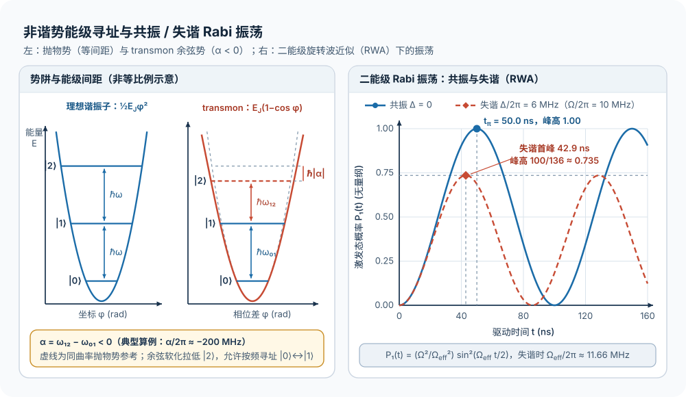
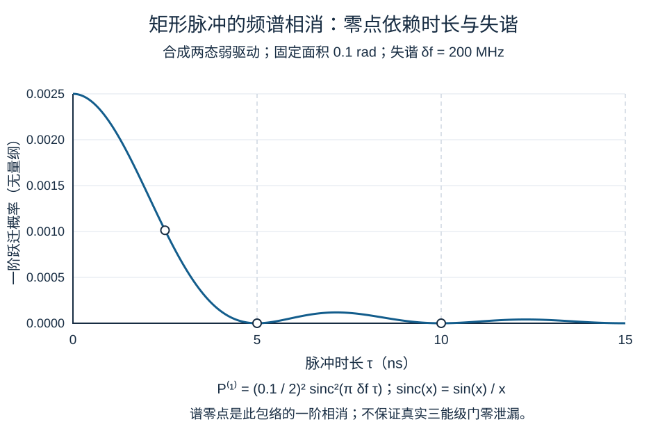

Q3｜从能级到物理量子比特
Q2 的定常哈密顿量给出了进动和翻转的理想模型。第 02 章 的旋转门和测量基提供了计算记号。把它们用到器件上，要先回答一个问题：实验室里的超导电路、捕获离子、中性原子或单光子，哪一个天生就只有两个状态？
答案是几乎没有。量子比特不是宇宙里天然只有两级的小球，而是工程师在多能级真实器件里精心隔离出的二维计算子空间。
本章把这条从物理器件通向抽象量子比特的桥搭通：我们怎样用频率、温度和约瑟夫森非线性电感把两个能级隔离开；微波脉冲如何按旋转坐标系里的几何规律精准翻转量子态；怎样把 T 1 T_1 T 1 χ \chi χ
首遍必读（★） ：§1–§4.3（能隙、热占据与 Transmon 非谐性）、§5–§7（自旋基态、Rabi/Ramsey/回波标定）与 §9.1、§9.3、§10–§11（色散读出结论、退相干与六大平台对照）；进阶选读（☆） ：§4.4（矩形脉冲 sinc \operatorname{sinc} sinc 第 09 章的硬件平台 、第 14 章的编译与控制 时，可按需回查。
1. 同一个能隙的三种写法：频率、角频率与能量
设工程师在某个物理系统中选出了两个能量本征态 ∣ 0 ⟩ |0\rangle ∣0 ⟩ ∣ 1 ⟩ |1\rangle ∣1 ⟩ E 1 > E 0 E_1 > E_0 E 1 > E 0
Δ E = E 1 − E 0 .
\Delta E = E_1 - E_0.
Δ E = E 1 − E 0 . 物理和工程文献里经常用三种等价方式报出这同一个能隙：能量 Δ E \Delta E Δ E J \mathrm{J} J e V \mathrm{eV} eV f f f H z = s − 1 \mathrm{Hz} = \mathrm{s}^{-1} Hz = s − 1 ω \omega ω r a d / s \mathrm{rad/s} rad/s h h h ℏ = h / ( 2 π ) \hbar = h/(2\pi) ℏ = h / ( 2 π )
Δ E = h f = ℏ ω , ω = 2 π f , h = 2 π ℏ .
\Delta E = h f = \hbar \omega,
\qquad
\omega = 2\pi f,
\qquad
h = 2\pi\hbar.
Δ E = h f = ℏ ω , ω = 2 π f , h = 2 π ℏ. 初学者在阅读超导芯片参数时最容易栽在 2 π 2\pi 2 π f = 1 f = 1 f = 1 ω = 2 π r a d / s \omega = 2\pi\ \mathrm{rad/s} ω = 2 π rad/s 50 50 50 f = 5 G H z f = 5\ \mathrm{GHz} f = 5 GHz ω = 2 π × 5 × 10 9 r a d / s ≈ 3.142 × 10 10 r a d / s \omega = 2\pi \times 5 \times 10^9\ \mathrm{rad/s} \approx 3.142 \times 10^{10}\ \mathrm{rad/s} ω = 2 π × 5 × 1 0 9 rad/s ≈ 3.142 × 1 0 10 rad/s 5 G H z 5\ \mathrm{GHz} 5 GHz f 01 = ω 01 / ( 2 π ) f_{01} = \omega_{01}/(2\pi) f 01 = ω 01 / ( 2 π ) 5 × 10 9 5 \times 10^9 5 × 1 0 9 ℏ ω \hbar\omega ℏ ω 2 π 2\pi 2 π
算例：5 GHz 对应多大能量与温度尺度
按照 2019 年起生效的国际单位制（SI）精确定义：
h = 6.62607015 × 10 − 34 J ⋅ s , k B = 1.380649 × 10 − 23 J / K , e = 1.602176634 × 10 − 19 C .
h = 6.62607015 \times 10^{-34}\ \mathrm{J\cdot s},
\qquad
k_{\mathrm{B}} = 1.380649 \times 10^{-23}\ \mathrm{J/K},
\qquad
e = 1.602176634 \times 10^{-19}\ \mathrm{C}.
h = 6.62607015 × 1 0 − 34 J ⋅ s , k B = 1.380649 × 1 0 − 23 J/K , e = 1.602176634 × 1 0 − 19 C . 代入 f = 5.0 G H z = 5.0 × 10 9 s − 1 f = 5.0\ \mathrm{GHz} = 5.0 \times 10^9\ \mathrm{s}^{-1} f = 5.0 GHz = 5.0 × 1 0 9 s − 1
Δ E = h f = ( 6.62607015 × 10 − 34 J ⋅ s ) ( 5.0 × 10 9 s − 1 ) ≈ 3.3130 × 10 − 24 J .
\Delta E = h f
= (6.62607015 \times 10^{-34}\ \mathrm{J\cdot s})(5.0 \times 10^9\ \mathrm{s}^{-1})
\approx 3.3130 \times 10^{-24}\ \mathrm{J}.
Δ E = h f = ( 6.62607015 × 1 0 − 34 J ⋅ s ) ( 5.0 × 1 0 9 s − 1 ) ≈ 3.3130 × 1 0 − 24 J . 换算成凝聚态与原子物理常用的微电子伏特（μ e V \mu\mathrm{eV} μ eV
Δ E e ≈ 3.3130 × 10 − 24 J 1.60218 × 10 − 19 C ≈ 2.0678 × 10 − 5 e V ≈ 20.7 μ e V .
\frac{\Delta E}{e}
\approx \frac{3.3130 \times 10^{-24}\ \mathrm{J}}{1.60218 \times 10^{-19}\ \mathrm{C}}
\approx 2.0678 \times 10^{-5}\ \mathrm{eV}
\approx 20.7\ \mu\mathrm{eV}.
e Δ E ≈ 1.60218 × 1 0 − 19 C 3.3130 × 1 0 − 24 J ≈ 2.0678 × 1 0 − 5 eV ≈ 20.7 μ eV . 再除以玻尔兹曼常数 k B k_{\mathrm{B}} k B
Δ E k B = h f k B ≈ 3.313035 × 10 − 24 J 1.380649 × 10 − 23 J / K ≈ 0.23996 K ≈ 240 m K .
\frac{\Delta E}{k_{\mathrm{B}}}
= \frac{hf}{k_{\mathrm{B}}}
\approx \frac{3.313035 \times 10^{-24}\ \mathrm{J}}{1.380649 \times 10^{-23}\ \mathrm{J/K}}
\approx 0.23996\ \mathrm{K}
\approx 240\ \mathrm{mK}.
k B Δ E = k B h f ≈ 1.380649 × 1 0 − 23 J/K 3.313035 × 1 0 − 24 J ≈ 0.23996 K ≈ 240 mK . 这个 0.24 K 0.24\ \mathrm{K} 0.24 K k B T k_{\mathrm{B}} T k B T 240 m K 240\ \mathrm{mK} 240 mK ∣ 0 ⟩ |0\rangle ∣0 ⟩ ∣ 1 ⟩ |1\rangle ∣1 ⟩
顺带提醒一条容易忽略的物理条件：并非只要驱动频率满足 h f = Δ E hf = \Delta E h f = Δ E Δ E = h f \Delta E = hf Δ E = h f
2. 两能级为什么只是受控近似
既然真实物理系统往往拥有几十个甚至无穷多个能级，工程师从里面挑出 ∣ 0 ⟩ |0\rangle ∣0 ⟩ ∣ 1 ⟩ |1\rangle ∣1 ⟩
可制备 ：能在合理时间内把绝大多数概率放进选定的初始基态（通常是 ∣ 0 ⟩ |0\rangle ∣0 ⟩ 可选择地控制 ：驱动 ∣ 0 ⟩ ↔ ∣ 1 ⟩ |0\rangle \leftrightarrow |1\rangle ∣0 ⟩ ↔ ∣1 ⟩ ∣ 2 ⟩ |2\rangle ∣2 ⟩ 可读出 ：测量仪器能可靠区分 ∣ 0 ⟩ |0\rangle ∣0 ⟩ ∣ 1 ⟩ |1\rangle ∣1 ⟩ 可保持 ：在门操作和等待期间，环境不会太快造成能量弛豫、退相位、粒子丢失或能级泄漏；可组合 ：做两比特纠缠门时，即便中途借用了辅助自由度（例如离子的集体振动模，或中性原子的高激发 Rydberg 态），门结束时也必须让它们复原并与逻辑量子比特解除纠缠。
只要量子态跑出了 { ∣ 0 ⟩ , ∣ 1 ⟩ } \{|0\rangle, |1\rangle\} { ∣0 ⟩ , ∣1 ⟩} 泄漏（leakage） 。初学者常把泄漏和比特翻转混为一谈，其实两者截然不同。举个三能级的具体数字：假设一次门操作结束后，测得系统处于 ∣ 0 ⟩ , ∣ 1 ⟩ , ∣ 2 ⟩ |0\rangle, |1\rangle, |2\rangle ∣0 ⟩ , ∣1 ⟩ , ∣2 ⟩ 0.10 , 0.85 , 0.05 0.10, 0.85, 0.05 0.10 , 0.85 , 0.05 0.10 + 0.85 = 0.95 0.10 + 0.85 = 0.95 0.10 + 0.85 = 0.95 ∣ 1 ⟩ |1\rangle ∣1 ⟩ 0.10 0.10 0.10 ∣ 2 ⟩ |2\rangle ∣2 ⟩ 0.05 0.05 0.05
对任意多能级系统和密度矩阵 ρ \rho ρ
P c o m p = ∣ 0 ⟩ ⟨ 0 ∣ + ∣ 1 ⟩ ⟨ 1 ∣ ,
P_{\mathrm{comp}} = |0\rangle\langle 0| + |1\rangle\langle 1|,
P comp = ∣0 ⟩ ⟨ 0∣ + ∣1 ⟩ ⟨ 1∣ , 那么此刻的泄漏概率 定义为
L = 1 − Tr ( P c o m p ρ ) .
L = 1 - \operatorname{Tr}(P_{\mathrm{comp}}\rho).
L = 1 − Tr ( P comp ρ ) . 对照刚才的三能级例子，Tr ( P c o m p ρ ) = 0.10 + 0.85 = 0.95 \operatorname{Tr}(P_{\mathrm{comp}}\rho) = 0.10 + 0.85 = 0.95 Tr ( P comp ρ ) = 0.10 + 0.85 = 0.95 L = 1 − 0.95 = 0.05 L = 1 - 0.95 = 0.05 L = 1 − 0.95 = 0.05 L = 0 L = 0 L = 0 Z Z Z L = 0 L = 0 L = 0 ∣ 2 ⟩ |2\rangle ∣2 ⟩
3. 温度怎样决定热占据：为什么要放进毫开尔文冰箱
假设我们想靠“静置冷却”把一颗 5 G H z 5\ \mathrm{GHz} 5 GHz ∣ 0 ⟩ |0\rangle ∣0 ⟩ T T T
p 1 p 0 = e − Δ E / ( k B T ) .
\frac{p_1}{p_0} = e^{-\Delta E / (k_{\mathrm{B}} T)}.
p 0 p 1 = e − Δ E / ( k B T ) . 记无量纲能量温度比 x ≡ Δ E / ( k B T ) > 0 x \equiv \Delta E / (k_{\mathrm{B}} T) > 0 x ≡ Δ E / ( k B T ) > 0 p 0 + p 1 = 1 p_0 + p_1 = 1 p 0 + p 1 = 1 p 0 = 1 − p 1 p_0 = 1 - p_1 p 0 = 1 − p 1
p 1 1 − p 1 = e − x ⟹ p 1 = e − x − p 1 e − x ⟹ p 1 ( 1 + e − x ) = e − x ,
\frac{p_1}{1 - p_1} = e^{-x}
\implies
p_1 = e^{-x} - p_1 e^{-x}
\implies
p_1(1 + e^{-x}) = e^{-x},
1 − p 1 p 1 = e − x ⟹ p 1 = e − x − p 1 e − x ⟹ p 1 ( 1 + e − x ) = e − x , 从而得到激发态的热平衡占据概率：
p 1 = e − x 1 + e − x = 1 1 + e x .
p_1 = \frac{e^{-x}}{1 + e^{-x}} = \frac{1}{1 + e^{x}}.
p 1 = 1 + e − x e − x = 1 + e x 1 . 这两个等价写法在手算时一样好用，但写程序算极低温（例如 x > 700 x > 700 x > 700 e − x 1 + e − x \frac{e^{-x}}{1 + e^{-x}} 1 + e − x e − x e + x e^{+x} e + x
代入 SI 常数时，温度必须用开尔文。以第 2 题的 4 G H z 4\,\mathrm{GHz} 4 GHz T = 50 m K = 0.050 K T=50\,\mathrm{mK}=0.050\,\mathrm{K} T = 50 mK = 0.050 K p 1 ≈ 0.021054 p_1\approx 0.021054 p 1 ≈ 0.021054 50 50 50 p 1 ≈ 0.499040 p_1\approx 0.499040 p 1 ≈ 0.499040 1 / 2 1/2 1/2
算例：5 GHz 量子比特在 20 mK 与 300 K 的天壤之别
第 1 节已算得 f = 5.0 G H z f = 5.0\ \mathrm{GHz} f = 5.0 GHz Δ E / k B ≈ 0.239962 K \Delta E / k_{\mathrm{B}} \approx 0.239962\ \mathrm{K} Δ E / k B ≈ 0.239962 K
情形一：稀释制冷机冷台温度 T = 20 m K = 0.020 K T = 20\ \mathrm{mK} = 0.020\ \mathrm{K} T = 20 mK = 0.020 K
x = Δ E k B T ≈ 0.239962 0.020 ≈ 11.9981.
x = \frac{\Delta E}{k_{\mathrm{B}} T} \approx \frac{0.239962}{0.020} \approx 11.9981.
x = k B T Δ E ≈ 0.020 0.239962 ≈ 11.9981. 代入玻尔兹曼比值：
p 1 p 0 = e − 11.9981 ≈ 6.156 × 10 − 6 , p 1 = 6.156 × 10 − 6 1 + 6.156 × 10 − 6 ≈ 6.16 × 10 − 6 .
\frac{p_1}{p_0} = e^{-11.9981} \approx 6.156 \times 10^{-6},
\qquad
p_1 = \frac{6.156 \times 10^{-6}}{1 + 6.156 \times 10^{-6}} \approx 6.16 \times 10^{-6}.
p 0 p 1 = e − 11.9981 ≈ 6.156 × 1 0 − 6 , p 1 = 1 + 6.156 × 1 0 − 6 6.156 × 1 0 − 6 ≈ 6.16 × 1 0 − 6 . 也就是说，在理想 20 m K 20\ \mathrm{mK} 20 mK 6 6 6 ∣ 1 ⟩ |1\rangle ∣1 ⟩
情形二：室温 T = 300 K T = 300\ \mathrm{K} T = 300 K
x = Δ E k B T ≈ 0.239962 300 ≈ 7.9987 × 10 − 4 .
x = \frac{\Delta E}{k_{\mathrm{B}} T} \approx \frac{0.239962}{300} \approx 7.9987 \times 10^{-4}.
x = k B T Δ E ≈ 300 0.239962 ≈ 7.9987 × 1 0 − 4 . 代入得到：
p 1 p 0 = e − 0.00079987 ≈ 0.999200 , p 1 = 0.999200 1 + 0.999200 ≈ 0.499800.
\frac{p_1}{p_0} = e^{-0.00079987} \approx 0.999200,
\qquad
p_1 = \frac{0.999200}{1 + 0.999200} \approx 0.499800.
p 0 p 1 = e − 0.00079987 ≈ 0.999200 , p 1 = 1 + 0.999200 0.999200 ≈ 0.499800. 室温下两个能级几乎各占一半（而且真实器件的更高能级此时也会被热涨落大量填满，二能级近似早已瓦解）。这就是微波频段超导量子芯片必须装进毫开尔文（m K \mathrm{mK} mK f ∼ 4 × 10 14 H z f \sim 4 \times 10^{14}\ \mathrm{Hz} f ∼ 4 × 1 0 14 Hz Δ E / k B ≈ 20000 K \Delta E / k_{\mathrm{B}} \approx 20000\ \mathrm{K} Δ E / k B ≈ 20000 K 300 K 300\ \mathrm{K} 300 K
下表用同一组 SI 精确常数列出 5.0 G H z 5.0\ \mathrm{GHz} 5.0 GHz
有效温度与冷台的真实差距
如果实验上测出激发态残余占据 p 1 ∈ ( 0 , 1 / 2 ) p_1 \in (0, 1/2) p 1 ∈ ( 0 , 1/2 ) 有效温度（effective temperature） ：
1 − p 1 p 1 = e Δ E / ( k B T e f f ) ⟹ T e f f = Δ E k B ln ( 1 − p 1 p 1 ) .
\frac{1 - p_1}{p_1} = e^{\Delta E / (k_{\mathrm{B}} T_{\mathrm{eff}})}
\implies
T_{\mathrm{eff}} = \frac{\Delta E}{k_{\mathrm{B}} \ln\!\left(\dfrac{1 - p_1}{p_1}\right)}.
p 1 1 − p 1 = e Δ E / ( k B T eff ) ⟹ T eff = k B ln ( p 1 1 − p 1 ) Δ E . 例如在 5.0 G H z 5.0\ \mathrm{GHz} 5.0 GHz p 1 = 1 % p_1 = 1\% p 1 = 1% ln ( 99 ) ≈ 4.5951 \ln(99) \approx 4.5951 ln ( 99 ) ≈ 4.5951
T e f f ≈ 0.239962 K 4.5951 ≈ 0.0522 K = 52.2 m K .
T_{\mathrm{eff}} \approx \frac{0.239962\ \mathrm{K}}{4.5951} \approx 0.0522\ \mathrm{K} = 52.2\ \mathrm{mK}.
T eff ≈ 4.5951 0.239962 K ≈ 0.0522 K = 52.2 mK . 请注意冷台温度和器件有效温度的区别。Jin 等人（2015, Phys. Rev. Lett. 114, 240501）在 3D transmon 上做过经典的变温测量：随着制冷机冷台从 150 m K 150\ \mathrm{mK} 150 mK 35 m K 35\ \mathrm{mK} 35 mK
多比特芯片上常见的残余激发往往在 0.1 % – 5 % 0.1\%\text{--}5\% 0.1% – 5% T e f f ≈ 35 – 80 m K T_{\mathrm{eff}} \approx 35\text{--}80\ \mathrm{mK} T eff ≈ 35 – 80 mK T e f f T_{\mathrm{eff}} T eff 99.9 % 99.9\% 99.9% 主动重置（active reset） （例如先测量再用条件脉冲翻回 ∣ 0 ⟩ |0\rangle ∣0 ⟩
4. 等间距谐振子的困境：约瑟夫森结与 Transmon 非谐性
现在我们把芯片降到了毫开尔文，接下来怎么选出一个可控的二能级？最容易想到的是最简单的量子电路——由一个线性电感 L L L C C C
4.1 为什么等间距楼梯没法单频控两级
正如Q4 用升降算符推导的，理想量子谐振子的能级像一把刻度完全均匀的梯子：
E n = ℏ ω r ( n + 1 2 ) , n = 0 , 1 , 2 , … , ω r = 1 L C .
E_n = \hbar\omega_r\left(n + \frac{1}{2}\right),
\qquad
n = 0, 1, 2, \dots,
\qquad
\omega_r = \frac{1}{\sqrt{LC}}.
E n = ℏ ω r ( n + 2 1 ) , n = 0 , 1 , 2 , … , ω r = L C 1 . 于是所有相邻台阶之间的跃迁频率一模一样：
ω 01 = ω 12 = ω 23 = ⋯ = ω r .
\omega_{01} = \omega_{12} = \omega_{23} = \cdots = \omega_r.
ω 01 = ω 12 = ω 23 = ⋯ = ω r . 问题马上暴露出来：当你打进一束频率为 ω r \omega_r ω r ∣ 0 ⟩ |0\rangle ∣0 ⟩ ∣ 1 ⟩ |1\rangle ∣1 ⟩ ∣ 1 ⟩ ↔ ∣ 2 ⟩ |1\rangle \leftrightarrow |2\rangle ∣1 ⟩ ↔ ∣2 ⟩ ∣ 2 ⟩ ↔ ∣ 3 ⟩ |2\rangle \leftrightarrow |3\rangle ∣2 ⟩ ↔ ∣3 ⟩ ∣ 1 ⟩ |1\rangle ∣1 ⟩ ∣ 2 ⟩ , ∣ 3 ⟩ , … |2\rangle, |3\rangle, \dots ∣2 ⟩ , ∣3 ⟩ , … { ∣ 0 ⟩ , ∣ 1 ⟩ } \{|0\rangle, |1\rangle\} { ∣0 ⟩ , ∣1 ⟩}

放大查看 ↗ 左：等间距谐振子抛物势与 transmon 余弦势非谐能级对比（非等比例示意）；右：旋转波近似下，Ω/2π=10 MHz 时共振与 6 MHz 失谐的 Rabi 振荡 （左面板为非等比例势能示意图，清晰对比等间距抛物势与变软的余弦势能级，右面板将在第 6.4 节用于对照共振与失谐 Rabi 振荡；可打开原尺寸 SVG 查看清晰细节。）
顺便澄清一句：谐振子不适合拿最低两级当裸频率寻址量子比特，并不意味着谐振子在量子计算里没用。第 18 章 的连续变量计算与第 19 章 的玻色编码（如猫态码、GKP 码），正是主动利用谐振器庞大的多能级空间，并借助辅助非高斯元件或非线性耦合来完成编码与纠错的。
要让一个电路模式能靠频率单独寻址最低两级，必须打破等间距，引入非谐性（anharmonicity） ，定义为前两级跃迁角频率之差：
α ≡ ω 12 − ω 01 .
\alpha \equiv \omega_{12} - \omega_{01}.
α ≡ ω 12 − ω 01 . 只要 ∣ α ∣ |\alpha| ∣ α ∣ ω 01 \omega_{01} ω 01 ∣ 1 ⟩ ↔ ∣ 2 ⟩ |1\rangle \leftrightarrow |2\rangle ∣1 ⟩ ↔ ∣2 ⟩
4.2 用约瑟夫森结弯折势能：非线性电感与 Transmon 公式
超导电路的妙招，是把线性电感换成一个约瑟夫森结 （Josephson junction）——两片超导体中间夹着一层约 1 – 2 n m 1\text{--}2\ \mathrm{nm} 1 – 2 nm 2 e 2e 2 e I I I V V V φ \varphi φ
I = I c sin φ , V = Φ 0 2 π d φ d t ,
I = I_c \sin\varphi,
\qquad
V = \frac{\Phi_0}{2\pi}\frac{d\varphi}{dt},
I = I c sin φ , V = 2 π Φ 0 d t d φ , 其中 I c I_c I c A \mathrm{A} A Φ 0 = h / ( 2 e ) ≈ 2.06783 × 10 − 15 W b \Phi_0 = h/(2e) \approx 2.06783 \times 10^{-15}\ \mathrm{Wb} Φ 0 = h / ( 2 e ) ≈ 2.06783 × 1 0 − 15 Wb
初学者常在文献里看到一句话：“约瑟夫森结是一只无耗散的非线性电感 。”普通的线性电感遵循 V = L d I d t V = L\frac{dI}{dt} V = L d t d I t t t d φ d t = 2 π Φ 0 V \frac{d\varphi}{dt} = \frac{2\pi}{\Phi_0}V d t d φ = Φ 0 2 π V φ ˙ \dot\varphi φ ˙
d I d t = I c cos φ d φ d t = 2 π I c Φ 0 cos φ ⋅ V ⟹ V = Φ 0 2 π I c cos φ ⏟ L J ( φ ) d I d t .
\frac{dI}{dt}
= I_c \cos\varphi\,\frac{d\varphi}{dt}
= \frac{2\pi I_c}{\Phi_0}\cos\varphi\cdot V
\implies
V = \underbrace{\frac{\Phi_0}{2\pi I_c \cos\varphi}}_{L_J(\varphi)}\frac{dI}{dt}.
d t d I = I c cos φ d t d φ = Φ 0 2 π I c cos φ ⋅ V ⟹ V = L J ( φ ) 2 π I c cos φ Φ 0 d t d I . 定义零电流下的基准约瑟夫森电感
L J 0 ≡ Φ 0 2 π I c = ℏ 2 e I c = ( Φ 0 / 2 π ) 2 E J , E J ≡ Φ 0 I c 2 π = ℏ I c 2 e ,
L_{J0} \equiv \frac{\Phi_0}{2\pi I_c} = \frac{\hbar}{2e I_c} = \frac{(\Phi_0/2\pi)^2}{E_J},
\qquad
E_J \equiv \frac{\Phi_0 I_c}{2\pi} = \frac{\hbar I_c}{2e},
L J 0 ≡ 2 π I c Φ 0 = 2 e I c ℏ = E J ( Φ 0 /2 π ) 2 , E J ≡ 2 π Φ 0 I c = 2 e ℏ I c , 那么当结两端存在相位差 φ \varphi φ I = I c sin φ I = I_c\sin\varphi I = I c sin φ ∣ φ ∣ < π / 2 |\varphi| < \pi/2 ∣ φ ∣ < π /2 cos φ = 1 − ( I / I c ) 2 \cos\varphi = \sqrt{1 - (I/I_c)^2} cos φ = 1 − ( I / I c ) 2
L J ( φ ) = L J 0 cos φ = L J 0 1 − ( I / I c ) 2 ≈ L J 0 ( 1 + φ 2 2 + ⋯ ) .
L_J(\varphi)
= \frac{L_{J0}}{\cos\varphi}
= \frac{L_{J0}}{\sqrt{1 - (I/I_c)^2}}
\approx L_{J0}\left(1 + \frac{\varphi^2}{2} + \cdots\right).
L J ( φ ) = cos φ L J 0 = 1 − ( I / I c ) 2 L J 0 ≈ L J 0 ( 1 + 2 φ 2 + ⋯ ) . 这一行公式直接道破了超导比特负非谐性 的电路直觉：普通线性线圈的电感 L L L ω = 1 / L C \omega = 1/\sqrt{LC} ω = 1/ L C φ \varphi φ I I I cos φ \cos\varphi cos φ L J ( φ ) L_J(\varphi) L J ( φ ) 大 （相当于弹簧越拉越“软”），高能态的等效振荡频率随之变低 ，自然得到 ω 12 < ω 01 \omega_{12} < \omega_{01} ω 12 < ω 01 α < 0 \alpha < 0 α < 0
再从初态 φ ( 0 ) = 0 \varphi(0) = 0 φ ( 0 ) = 0 φ ( t ) = φ \varphi(t) = \varphi φ ( t ) = φ I ( t ′ ) V ( t ′ ) I(t')V(t') I ( t ′ ) V ( t ′ )
U ( φ ) − U ( 0 ) = ∫ 0 t I ( t ′ ) V ( t ′ ) d t ′ = Φ 0 I c 2 π ∫ 0 φ sin φ ′ d φ ′ = E J ( 1 − cos φ ) .
U(\varphi) - U(0)
= \int_0^t I(t')V(t')\,dt'
= \frac{\Phi_0 I_c}{2\pi}\int_0^\varphi \sin\varphi'\,d\varphi'
= E_J(1 - \cos\varphi).
U ( φ ) − U ( 0 ) = ∫ 0 t I ( t ′ ) V ( t ′ ) d t ′ = 2 π Φ 0 I c ∫ 0 φ sin φ ′ d φ ′ = E J ( 1 − cos φ ) . 取势能零点 U ( 0 ) = 0 U(0) = 0 U ( 0 ) = 0 U ( φ ) = E J ( 1 − cos φ ) ≥ 0 U(\varphi) = E_J(1 - \cos\varphi) \ge 0 U ( φ ) = E J ( 1 − cos φ ) ≥ 0 v2-q3-anharmonic-rabi.svg 左面板画出的余弦势能曲线严丝合缝；在写出哈密顿量计算能级差时，常丢去不改变量子动力学的常数偏移 E J E_J E J − E J cos φ -E_J\cos\varphi − E J cos φ
再加上并联总电容 C Σ C_\Sigma C Σ n ^ = Q ^ / ( 2 e ) \hat n = \hat Q/(2e) n ^ = Q ^ / ( 2 e ) φ ^ \hat\varphi φ ^ [ φ ^ , n ^ ] = i [\hat\varphi, \hat n] = i [ φ ^ , n ^ ] = i transmon 量子比特的完整哈密顿量（Koch et al., 2007）：
H ^ = 4 E C ( n ^ − n g ) 2 − E J cos φ ^ , E C ≡ e 2 2 C Σ .
\hat H = 4E_C(\hat n - n_g)^2 - E_J \cos\hat\varphi,
\qquad
E_C \equiv \frac{e^2}{2C_\Sigma}.
H ^ = 4 E C ( n ^ − n g ) 2 − E J cos φ ^ , E C ≡ 2 C Σ e 2 . 这里 4 E C = ( 2 e ) 2 / ( 2 C Σ ) 4E_C = (2e)^2/(2C_\Sigma) 4 E C = ( 2 e ) 2 / ( 2 C Σ ) 4 4 4 2 e 2e 2 e n g n_g n g
当设计参数满足 E J / E C ≫ 1 E_J / E_C \gg 1 E J / E C ≫ 1 50 – 80 50\text{--}80 50 – 80 φ ^ \hat\varphi φ ^ φ = 0 \varphi = 0 φ = 0 n g n_g n g n g = 0 n_g = 0 n g = 0
第一步：把余弦势展开到四阶。
− E J cos φ ^ = − E J ( 1 − φ ^ 2 2 ! + φ ^ 4 4 ! − ⋯ ) = − E J + 1 2 E J φ ^ 2 − 1 24 E J φ ^ 4 + O ( φ ^ 6 ) .
-E_J \cos\hat\varphi
= -E_J\left(1 - \frac{\hat\varphi^2}{2!} + \frac{\hat\varphi^4}{4!} - \cdots\right)
= -E_J + \frac{1}{2}E_J\hat\varphi^2 - \frac{1}{24}E_J\hat\varphi^4 + O(\hat\varphi^6).
− E J cos φ ^ = − E J ( 1 − 2 ! φ ^ 2 + 4 ! φ ^ 4 − ⋯ ) = − E J + 2 1 E J φ ^ 2 − 24 1 E J φ ^ 4 + O ( φ ^ 6 ) . 前两项（静电能 4 E C n ^ 2 4E_C\hat n^2 4 E C n ^ 2 1 2 E J φ ^ 2 \frac{1}{2}E_J\hat\varphi^2 2 1 E J φ ^ 2 4 E C n ^ 2 + 1 2 E J φ ^ 2 4E_C\hat n^2 + \frac{1}{2}E_J\hat\varphi^2 4 E C n ^ 2 + 2 1 E J φ ^ 2 p ^ 2 2 m + 1 2 m ω 2 x ^ 2 \frac{\hat p^2}{2m} + \frac{1}{2}m\omega^2\hat x^2 2 m p ^ 2 + 2 1 m ω 2 x ^ 2 1 / ( 2 m ) ↔ 4 E C 1/(2m) \leftrightarrow 4E_C 1/ ( 2 m ) ↔ 4 E C m ω 2 ↔ E J m\omega^2 \leftrightarrow E_J m ω 2 ↔ E J ℏ ω p = 8 E J E C \hbar\omega_p = \sqrt{8 E_J E_C} ℏ ω p = 8 E J E C
第二步：引入升降算符并核对系数。
定义满足 [ b ^ , b ^ † ] = 1 [\hat b, \hat b^\dagger] = 1 [ b ^ , b ^ † ] = 1 b ^ , b ^ † \hat b, \hat b^\dagger b ^ , b ^ † φ ^ \hat\varphi φ ^ n ^ \hat n n ^
φ ^ = φ z p f ( b ^ + b ^ † ) , n ^ = i n z p f ( b ^ † − b ^ ) ,
\hat\varphi = \varphi_{\mathrm{zpf}}(\hat b + \hat b^\dagger),
\qquad
\hat n = i\, n_{\mathrm{zpf}}(\hat b^\dagger - \hat b),
φ ^ = φ zpf ( b ^ + b ^ † ) , n ^ = i n zpf ( b ^ † − b ^ ) , 其中零点涨落幅度选为
φ z p f = ( 2 E C E J ) 1 / 4 , n z p f = 1 2 ( E J 2 E C ) 1 / 4 .
\varphi_{\mathrm{zpf}} = \left(\frac{2E_C}{E_J}\right)^{1/4},
\qquad
n_{\mathrm{zpf}} = \frac{1}{2}\left(\frac{E_J}{2E_C}\right)^{1/4}.
φ zpf = ( E J 2 E C ) 1/4 , n zpf = 2 1 ( 2 E C E J ) 1/4 . 我们先验算对易关系是否守恒：
[ φ ^ , n ^ ] = i φ z p f n z p f [ b ^ + b ^ † , b ^ † − b ^ ] = i φ z p f n z p f ( [ b ^ , b ^ † ] − [ b ^ † , b ^ ] ) = 2 i φ z p f n z p f .
[\hat\varphi, \hat n]
= i\,\varphi_{\mathrm{zpf}} n_{\mathrm{zpf}}\,[\hat b + \hat b^\dagger,\, \hat b^\dagger - \hat b]
= i\,\varphi_{\mathrm{zpf}} n_{\mathrm{zpf}}\bigl([\hat b, \hat b^\dagger] - [\hat b^\dagger, \hat b]\bigr)
= 2i\,\varphi_{\mathrm{zpf}} n_{\mathrm{zpf}}.
[ φ ^ , n ^ ] = i φ zpf n zpf [ b ^ + b ^ † , b ^ † − b ^ ] = i φ zpf n zpf ( [ b ^ , b ^ † ] − [ b ^ † , b ^ ] ) = 2 i φ zpf n zpf . 而 2 φ z p f n z p f = 2 ⋅ 1 2 ( 2 E C E J ⋅ E J 2 E C ) 1 / 4 = 1 2\varphi_{\mathrm{zpf}} n_{\mathrm{zpf}} = 2 \cdot \frac{1}{2}\left(\frac{2E_C}{E_J}\cdot\frac{E_J}{2E_C}\right)^{1/4} = 1 2 φ zpf n zpf = 2 ⋅ 2 1 ( E J 2 E C ⋅ 2 E C E J ) 1/4 = 1 [ φ ^ , n ^ ] = i [\hat\varphi, \hat n] = i [ φ ^ , n ^ ] = i
再分别算二次项系数：
4 E C n z p f 2 = 4 E C ⋅ 1 4 E J 2 E C = 1 4 8 E J E C , 1 2 E J φ z p f 2 = 1 2 E J 2 E C E J = 1 4 8 E J E C .
4E_C n_{\mathrm{zpf}}^2 = 4E_C \cdot \frac{1}{4}\sqrt{\frac{E_J}{2E_C}} = \frac{1}{4}\sqrt{8E_J E_C},
\qquad
\frac{1}{2}E_J \varphi_{\mathrm{zpf}}^2 = \frac{1}{2}E_J \sqrt{\frac{2E_C}{E_J}} = \frac{1}{4}\sqrt{8E_J E_C}.
4 E C n zpf 2 = 4 E C ⋅ 4 1 2 E C E J = 4 1 8 E J E C , 2 1 E J φ zpf 2 = 2 1 E J E J 2 E C = 4 1 8 E J E C . 把它们相加，利用 − ( b ^ † − b ^ ) 2 + ( b ^ + b ^ † ) 2 = 2 ( b ^ b ^ † + b ^ † b ^ ) = 4 ( b ^ † b ^ + 1 2 ) -(\hat b^\dagger - \hat b)^2 + (\hat b + \hat b^\dagger)^2 = 2(\hat b\hat b^\dagger + \hat b^\dagger\hat b) = 4\left(\hat b^\dagger\hat b + \frac{1}{2}\right) − ( b ^ † − b ^ ) 2 + ( b ^ + b ^ † ) 2 = 2 ( b ^ b ^ † + b ^ † b ^ ) = 4 ( b ^ † b ^ + 2 1 ) 8 E J E C ( b ^ † b ^ + 1 2 ) \sqrt{8E_J E_C}\left(\hat b^\dagger\hat b + \frac{1}{2}\right) 8 E J E C ( b ^ † b ^ + 2 1 )
再看四次微扰项系数：
− 1 24 E J φ z p f 4 = − 1 24 E J ⋅ 2 E C E J = − E C 12 .
-\frac{1}{24}E_J \varphi_{\mathrm{zpf}}^4
= -\frac{1}{24}E_J \cdot \frac{2E_C}{E_J}
= -\frac{E_C}{12}.
− 24 1 E J φ zpf 4 = − 24 1 E J ⋅ E J 2 E C = − 12 E C . E J E_J E J − E J -E_J − E J Duffing 振子哈密顿量 ：
H ^ D u f f i n g = 8 E J E C ( b ^ † b ^ + 1 2 ) − E C 12 ( b ^ + b ^ † ) 4 .
\hat H_{\mathrm{Duffing}}
= \sqrt{8E_J E_C}\left(\hat b^\dagger\hat b + \frac{1}{2}\right)
- \frac{E_C}{12}(\hat b + \hat b^\dagger)^4.
H ^ Duffing = 8 E J E C ( b ^ † b ^ + 2 1 ) − 12 E C ( b ^ + b ^ † ) 4 . 第三步：逐项数出 ( b ^ + b ^ † ) 4 (\hat b + \hat b^\dagger)^4 ( b ^ + b ^ † ) 4 m m m
一阶微扰论告诉我们，第 m m m ∣ m ⟩ |m\rangle ∣ m ⟩ − E C 12 ⟨ m ∣ ( b ^ + b ^ † ) 4 ∣ m ⟩ -\frac{E_C}{12}\langle m|(\hat b + \hat b^\dagger)^4|m\rangle − 12 E C ⟨ m ∣ ( b ^ + b ^ † ) 4 ∣ m ⟩ ( b ^ + b ^ † ) 4 (\hat b + \hat b^\dagger)^4 ( b ^ + b ^ † ) 4 2 4 = 16 2^4 = 16 2 4 = 16 b ^ \hat b b ^ b ^ † \hat b^\dagger b ^ † ( 4 2 ) = 6 \binom{4}{2} = 6 ( 2 4 ) = 6 ∣ m ⟩ |m\rangle ∣ m ⟩ ∣ m ⟩ |m\rangle ∣ m ⟩ ⟨ m ∣ \langle m| ⟨ m ∣ b ^ ∣ m ⟩ = m ∣ m − 1 ⟩ \hat b|m\rangle = \sqrt{m}|m-1\rangle b ^ ∣ m ⟩ = m ∣ m − 1 ⟩ b ^ † ∣ m ⟩ = m + 1 ∣ m + 1 ⟩ \hat b^\dagger|m\rangle = \sqrt{m+1}|m+1\rangle b ^ † ∣ m ⟩ = m + 1 ∣ m + 1 ⟩
⟨ m ∣ b ^ † b ^ † b ^ b ^ ∣ m ⟩ = m ( m − 1 ) = m 2 − m \langle m|\hat b^\dagger \hat b^\dagger \hat b \hat b|m\rangle = m(m-1) = m^2 - m ⟨ m ∣ b ^ † b ^ † b ^ b ^ ∣ m ⟩ = m ( m − 1 ) = m 2 − m ⟨ m ∣ b ^ † b ^ b ^ † b ^ ∣ m ⟩ = m 2 \langle m|\hat b^\dagger \hat b \hat b^\dagger \hat b|m\rangle = m^2 ⟨ m ∣ b ^ † b ^ b ^ † b ^ ∣ m ⟩ = m 2 ⟨ m ∣ b ^ † b ^ b ^ b ^ † ∣ m ⟩ = m ( m + 1 ) = m 2 + m \langle m|\hat b^\dagger \hat b \hat b \hat b^\dagger|m\rangle = m(m+1) = m^2 + m ⟨ m ∣ b ^ † b ^ b ^ b ^ † ∣ m ⟩ = m ( m + 1 ) = m 2 + m ⟨ m ∣ b ^ b ^ † b ^ † b ^ ∣ m ⟩ = m ( m + 1 ) = m 2 + m \langle m|\hat b \hat b^\dagger \hat b^\dagger \hat b|m\rangle = m(m+1) = m^2 + m ⟨ m ∣ b ^ b ^ † b ^ † b ^ ∣ m ⟩ = m ( m + 1 ) = m 2 + m ⟨ m ∣ b ^ b ^ † b ^ b ^ † ∣ m ⟩ = ( m + 1 ) 2 = m 2 + 2 m + 1 \langle m|\hat b \hat b^\dagger \hat b \hat b^\dagger|m\rangle = (m+1)^2 = m^2 + 2m + 1 ⟨ m ∣ b ^ b ^ † b ^ b ^ † ∣ m ⟩ = ( m + 1 ) 2 = m 2 + 2 m + 1 ⟨ m ∣ b ^ b ^ b ^ † b ^ † ∣ m ⟩ = ( m + 1 ) ( m + 2 ) = m 2 + 3 m + 2 \langle m|\hat b \hat b \hat b^\dagger \hat b^\dagger|m\rangle = (m+1)(m+2) = m^2 + 3m + 2 ⟨ m ∣ b ^ b ^ b ^ † b ^ † ∣ m ⟩ = ( m + 1 ) ( m + 2 ) = m 2 + 3 m + 2
把这 6 个多项式竖着加在一起：
⟨ m ∣ ( b ^ + b ^ † ) 4 ∣ m ⟩ = 6 m 2 + ( − 1 + 0 + 1 + 1 + 2 + 3 ) m + ( 1 + 2 ) = 6 m 2 + 6 m + 3.
\langle m|(\hat b + \hat b^\dagger)^4|m\rangle
= 6m^2 + (-1 + 0 + 1 + 1 + 2 + 3)m + (1 + 2)
= 6m^2 + 6m + 3.
⟨ m ∣ ( b ^ + b ^ † ) 4 ∣ m ⟩ = 6 m 2 + ( − 1 + 0 + 1 + 1 + 2 + 3 ) m + ( 1 + 2 ) = 6 m 2 + 6 m + 3. 乘以 − E C 12 -\frac{E_C}{12} − 12 E C m m m
E m ≈ 8 E J E C ( m + 1 2 ) − E C 2 m ( m + 1 ) − E C 4 .
E_m \approx \sqrt{8E_J E_C}\left(m + \frac{1}{2}\right) - \frac{E_C}{2}m(m+1) - \frac{E_C}{4}.
E m ≈ 8 E J E C ( m + 2 1 ) − 2 E C m ( m + 1 ) − 4 E C . 代入 m = 0 , 1 , 2 m = 0, 1, 2 m = 0 , 1 , 2
E 0 ≈ 1 2 8 E J E C − E C 4 , E 1 ≈ 3 2 8 E J E C − 5 E C 4 , E 2 ≈ 5 2 8 E J E C − 13 E C 4 .
E_0 \approx \frac{1}{2}\sqrt{8E_J E_C} - \frac{E_C}{4},
\qquad
E_1 \approx \frac{3}{2}\sqrt{8E_J E_C} - \frac{5E_C}{4},
\qquad
E_2 \approx \frac{5}{2}\sqrt{8E_J E_C} - \frac{13E_C}{4}.
E 0 ≈ 2 1 8 E J E C − 4 E C , E 1 ≈ 2 3 8 E J E C − 4 5 E C , E 2 ≈ 2 5 8 E J E C − 4 13 E C . 于是两级跃迁能量和非谐性一目了然：
ℏ ω 01 = E 1 − E 0 ≈ 8 E J E C − E C , ℏ ω 12 = E 2 − E 1 ≈ 8 E J E C − 2 E C ,
\hbar\omega_{01} = E_1 - E_0 \approx \sqrt{8E_J E_C} - E_C,
\qquad
\hbar\omega_{12} = E_2 - E_1 \approx \sqrt{8E_J E_C} - 2E_C,
ℏ ω 01 = E 1 − E 0 ≈ 8 E J E C − E C , ℏ ω 12 = E 2 − E 1 ≈ 8 E J E C − 2 E C , ℏ α = ℏ ( ω 12 − ω 01 ) ≈ − E C < 0.
\hbar\alpha = \hbar(\omega_{12} - \omega_{01}) \approx -E_C < 0.
ℏ α = ℏ ( ω 12 − ω 01 ) ≈ − E C < 0. 去掉零点常数后，这一有效低能谱可以直接写成简洁的 Kerr / Duffing 形式（记粒子数算符 N ^ = b ^ † b ^ \hat N = \hat b^\dagger\hat b N ^ = b ^ † b ^
H ^ e f f ℏ = ω 01 N ^ + α 2 N ^ ( N ^ − 1 ) .
\frac{\hat H_{\mathrm{eff}}}{\hbar} = \omega_{01}\hat N + \frac{\alpha}{2}\hat N(\hat N - 1).
ℏ H ^ eff = ω 01 N ^ + 2 α N ^ ( N ^ − 1 ) . 请检查一下前三个对角元：m = 0 m=0 m = 0 0 0 0 m = 1 m=1 m = 1 ω 01 \omega_{01} ω 01 m = 2 m=2 m = 2 2 ω 01 + α = ω 01 + ω 12 2\omega_{01} + \alpha = \omega_{01} + \omega_{12} 2 ω 01 + α = ω 01 + ω 12 负的 ：余弦势 − E J cos φ -E_J\cos\varphi − E J cos φ 1 2 E J φ 2 \frac{1}{2}E_J\varphi^2 2 1 E J φ 2 f 12 < f 01 f_{12} < f_{01} f 12 < f 01
4.3 真实物理标杆算例：为什么 transmon 选在 E J / E C ≈ 60 E_J/E_C \approx 60 E J / E C ≈ 60
拿一组贴近真实超导实验室的典型器件参数来手算一遍：
充电能 E C / h = 250 M H z E_C / h = 250\ \mathrm{MHz} E C / h = 250 MHz E C = e 2 / ( 2 C Σ ) E_C = e^2/(2C_\Sigma) E C = e 2 / ( 2 C Σ ) C Σ ≈ 77.48 f F C_\Sigma \approx 77.48\ \mathrm{fF} C Σ ≈ 77.48 fF
约瑟夫森能 E J / h = 15.0 G H z E_J / h = 15.0\ \mathrm{GHz} E J / h = 15.0 GHz E J = Φ 0 I c / ( 2 π ) E_J = \Phi_0 I_c/(2\pi) E J = Φ 0 I c / ( 2 π ) I c ≈ 30.20 n A I_c \approx 30.20\ \mathrm{nA} I c ≈ 30.20 nA
无量纲能量比 E J / E C = 15000 / 250 = 60 E_J / E_C = 15000 / 250 = 60 E J / E C = 15000/250 = 60 φ z p f = ( 2 / 60 ) 1 / 4 ≈ 0.427 r a d \varphi_{\mathrm{zpf}} = (2/60)^{1/4} \approx 0.427\ \mathrm{rad} φ zpf = ( 2/60 ) 1/4 ≈ 0.427 rad
先用刚才导出的零电流约瑟夫森电感做一次经典电路与量子能标的合龙检验：
L J 0 = Φ 0 2 π I c = 2.06783 × 10 − 15 W b 2 π × 30.20 × 10 − 9 A ≈ 10.90 n H ,
L_{J0}
= \frac{\Phi_0}{2\pi I_c}
= \frac{2.06783 \times 10^{-15}\ \mathrm{Wb}}{2\pi \times 30.20 \times 10^{-9}\ \mathrm{A}}
\approx 10.90\ \mathrm{nH},
L J 0 = 2 π I c Φ 0 = 2 π × 30.20 × 1 0 − 9 A 2.06783 × 1 0 − 15 Wb ≈ 10.90 nH , f p = 1 2 π L J 0 C Σ ≈ 1 2 π 10.90 × 10 − 9 × 77.48 × 10 − 15 H z ≈ 5.477 G H z .
f_p
= \frac{1}{2\pi\sqrt{L_{J0} C_\Sigma}}
\approx \frac{1}{2\pi\sqrt{10.90 \times 10^{-9} \times 77.48 \times 10^{-15}}}\ \mathrm{Hz}
\approx 5.477\ \mathrm{GHz}.
f p = 2 π L J 0 C Σ 1 ≈ 2 π 10.90 × 1 0 − 9 × 77.48 × 1 0 − 15 1 Hz ≈ 5.477 GHz . 再把同一组能量参数代入一阶微扰公式：
8 E J E C h = 8 × 15.0 × 0.250 G H z = 30 G H z ≈ 5.477 G H z ,
\frac{\sqrt{8E_J E_C}}{h}
= \sqrt{8 \times 15.0 \times 0.250}\ \mathrm{GHz}
= \sqrt{30}\ \mathrm{GHz}
\approx 5.477\ \mathrm{GHz},
h 8 E J E C = 8 × 15.0 × 0.250 GHz = 30 GHz ≈ 5.477 GHz , 两条路径算出的小振幅等离子体频率 f p f_p f p
f 01 = ω 01 2 π ≈ 5.477 − 0.250 = 5.227 G H z , α 2 π ≈ − 250 M H z , f 12 = f 01 + α 2 π ≈ 4.977 G H z .
f_{01} = \frac{\omega_{01}}{2\pi} \approx 5.477 - 0.250 = 5.227\ \mathrm{GHz},
\qquad
\frac{\alpha}{2\pi} \approx -250\ \mathrm{MHz},
\qquad
f_{12} = f_{01} + \frac{\alpha}{2\pi} \approx 4.977\ \mathrm{GHz}.
f 01 = 2 π ω 01 ≈ 5.477 − 0.250 = 5.227 GHz , 2 π α ≈ − 250 MHz , f 12 = f 01 + 2 π α ≈ 4.977 GHz . 相对非谐性为
∣ α ∣ ω 01 ≈ 0.250 5.227 ≈ 4.78 % ( 大比值渐近式 E C 8 E J = 1 480 ≈ 4.56 % ) .
\frac{|\alpha|}{\omega_{01}}
\approx \frac{0.250}{5.227} \approx 4.78\%
\qquad
\left(\text{大比值渐近式 } \sqrt{\frac{E_C}{8E_J}} = \frac{1}{\sqrt{480}} \approx 4.56\%\right).
ω 01 ∣ α ∣ ≈ 5.227 0.250 ≈ 4.78% ( 大比值渐近式 8 E J E C = 480 1 ≈ 4.56% ) . 这里顺手做一次严谨的数值回验：上面的一阶公式截断了 φ ^ 6 \hat\varphi^6 φ ^ 6 4 E C ( n ^ − n g ) 2 − E J cos φ ^ 4E_C(\hat n - n_g)^2 - E_J\cos\hat\varphi 4 E C ( n ^ − n g ) 2 − E J cos φ ^ f 01 ≈ 5.214 G H z f_{01} \approx 5.214\ \mathrm{GHz} f 01 ≈ 5.214 GHz α / ( 2 π ) ≈ − 283 M H z \alpha/(2\pi) \approx -283\ \mathrm{MHz} α / ( 2 π ) ≈ − 283 MHz 0.25 % 0.25\% 0.25%
那么，为什么工程师偏偏要把电容做大，把 E J / E C E_J/E_C E J / E C ∼ 1 \sim 1 ∼ 1 50 – 80 50\text{--}80 50 – 80 n g n_g n g m m m ϵ m ≡ E m ( n g = 1 / 2 ) − E m ( n g = 0 ) \epsilon_m \equiv E_m(n_g = 1/2) - E_m(n_g = 0) ϵ m ≡ E m ( n g = 1/2 ) − E m ( n g = 0 ) E J / E C E_J/E_C E J / E C
ϵ m ≃ ( − 1 ) m E C 2 4 m + 5 m ! 2 π ( E J 2 E C ) m 2 + 3 4 e − 8 E J / E C .
\epsilon_m
\simeq (-1)^m E_C \frac{2^{4m+5}}{m!}\sqrt{\frac{2}{\pi}}
\left(\frac{E_J}{2E_C}\right)^{\frac{m}{2}+\frac{3}{4}}
e^{-\sqrt{8E_J / E_C}}.
ϵ m ≃ ( − 1 ) m E C m ! 2 4 m + 5 π 2 ( 2 E C E J ) 2 m + 4 3 e − 8 E J / E C . 请特别留意随能级序数 m m m 2 4 m + 5 m ! \frac{2^{4m+5}}{m!} m ! 2 4 m + 5 ( − 1 ) m (-1)^m ( − 1 ) m E C / h = 250 M H z E_C/h = 250\ \mathrm{MHz} E C / h = 250 MHz E J / E C = 60 E_J/E_C = 60 E J / E C = 60
∣ ϵ 0 ∣ / h ≈ 0.024 k H z , ∣ ϵ 1 ∣ / h ≈ 1.85 k H z , ∣ ϵ 2 ∣ / h ≈ 65.2 k H z
|\epsilon_0|/h \approx 0.024\ \mathrm{kHz},
\qquad
|\epsilon_1|/h \approx 1.85\ \mathrm{kHz},
\qquad
|\epsilon_2|/h \approx 65.2\ \mathrm{kHz}
∣ ϵ 0 ∣/ h ≈ 0.024 kHz , ∣ ϵ 1 ∣/ h ≈ 1.85 kHz , ∣ ϵ 2 ∣/ h ≈ 65.2 kHz （对应 Koch 渐近式分别给出 0.025 k H z 0.025\ \mathrm{kHz} 0.025 kHz 2.19 k H z 2.19\ \mathrm{kHz} 2.19 kHz 96.0 k H z 96.0\ \mathrm{kHz} 96.0 kHz ( − 1 ) 0 = + 1 (-1)^0 = +1 ( − 1 ) 0 = + 1 ( − 1 ) 1 = − 1 (-1)^1 = -1 ( − 1 ) 1 = − 1 ϵ 01 ≡ ∣ E 01 ( n g = 1 / 2 ) − E 01 ( n g = 0 ) ∣ = ∣ ϵ 0 ∣ + ∣ ϵ 1 ∣ \epsilon_{01} \equiv |E_{01}(n_g=1/2) - E_{01}(n_g=0)| = |\epsilon_0| + |\epsilon_1| ϵ 01 ≡ ∣ E 01 ( n g = 1/2 ) − E 01 ( n g = 0 ) ∣ = ∣ ϵ 0 ∣ + ∣ ϵ 1 ∣ E J / E C E_J/E_C E J / E C 1 1 1 60 60 60 776 M H z 776\ \mathrm{MHz} 776 MHz 1.88 k H z 1.88\ \mathrm{kHz} 1.88 kHz ∣ α ∣ / ( 2 π ) |\alpha|/(2\pi) ∣ α ∣/ ( 2 π ) 250 – 283 M H z 250\text{--}283\ \mathrm{MHz} 250 – 283 MHz ∣ ϵ 2 ∣ |\epsilon_2| ∣ ϵ 2 ∣ ∣ 2 ⟩ |2\rangle ∣2 ⟩
初学者读文献时容易误以为“E J / E C E_J/E_C E J / E C 绝对非谐性 ∣ α ∣ ≈ E C / ℏ |\alpha| \approx E_C/\hbar ∣ α ∣ ≈ E C /ℏ E C E_C E C f 01 f_{01} f 01 5 G H z 5\ \mathrm{GHz} 5 GHz E C E_C E C E J / E C E_J/E_C E J / E C
练 Q3-A（就地练习｜Transmon 参数与约瑟夫森非线性电感）
已知一颗 transmon 的并联总电容 C Σ = 96.8 f F C_\Sigma = 96.8\ \mathrm{fF} C Σ = 96.8 fF I c = 25.0 n A I_c = 25.0\ \mathrm{nA} I c = 25.0 nA E C / h E_C/h E C / h E J / h E_J/h E J / h L J 0 L_{J0} L J 0 E J / E C E_J/E_C E J / E C 1 / ( 2 π L J 0 C Σ ) 1/(2\pi\sqrt{L_{J0}C_\Sigma}) 1/ ( 2 π L J 0 C Σ ) 8 E J E C / h \sqrt{8E_JE_C}/h 8 E J E C / h f p f_p f p f 01 f_{01} f 01 α / ( 2 π ) \alpha/(2\pi) α / ( 2 π ) f 12 f_{12} f 12 L J ( φ ) = L J 0 / cos φ L_J(\varphi) = L_{J0}/\cos\varphi L J ( φ ) = L J 0 / cos φ f 12 < f 01 f_{12} < f_{01} f 12 < f 01
参考核对 ：（1）E C / h = e 2 / ( 2 h C Σ ) ≈ 200.1 M H z E_C/h = e^2/(2hC_\Sigma) \approx 200.1\ \mathrm{MHz} E C / h = e 2 / ( 2 h C Σ ) ≈ 200.1 MHz E J / h = Φ 0 I c / ( 2 π h ) ≈ 12.42 G H z E_J/h = \Phi_0 I_c/(2\pi h) \approx 12.42\ \mathrm{GHz} E J / h = Φ 0 I c / ( 2 πh ) ≈ 12.42 GHz L J 0 = Φ 0 / ( 2 π I c ) ≈ 13.16 n H L_{J0} = \Phi_0/(2\pi I_c) \approx 13.16\ \mathrm{nH} L J 0 = Φ 0 / ( 2 π I c ) ≈ 13.16 nH E J / E C ≈ 62.1 E_J/E_C \approx 62.1 E J / E C ≈ 62.1 f p ≈ 4.458 G H z f_p \approx 4.458\ \mathrm{GHz} f p ≈ 4.458 GHz f 01 ≈ 4.258 G H z f_{01} \approx 4.258\ \mathrm{GHz} f 01 ≈ 4.258 GHz α / ( 2 π ) ≈ − 200 M H z \alpha/(2\pi) \approx -200\ \mathrm{MHz} α / ( 2 π ) ≈ − 200 MHz f 12 ≈ 4.058 G H z f_{12} \approx 4.058\ \mathrm{GHz} f 12 ≈ 4.058 GHz φ \varphi φ cos φ \cos\varphi cos φ L J ( φ ) L_J(\varphi) L J ( φ ) f 12 < f 01 f_{12} < f_{01} f 12 < f 01
4.4 进阶选读：门越快为什么越容易碰到 ∣ 2 ⟩ |2\rangle ∣2 ⟩ sinc \operatorname{sinc} sinc
有了约 200 – 250 M H z 200\text{--}250\ \mathrm{MHz} 200 – 250 MHz
声音或电脉冲持续的时间 τ \tau τ Δ f ∼ 1 / τ \Delta f \sim 1/\tau Δ f ∼ 1/ τ f 01 = 5.0 G H z f_{01}=5.0\,\mathrm{GHz} f 01 = 5.0 GHz f 12 = 4.8 G H z f_{12}=4.8\,\mathrm{GHz} f 12 = 4.8 GHz α / ( 2 π ) = − 200 M H z \alpha/(2\pi)=-200\,\mathrm{MHz} α / ( 2 π ) = − 200 MHz τ \tau τ 20 n s 20\,\mathrm{ns} 20 ns 5 n s 5\,\mathrm{ns} 5 ns 1 / τ 1/\tau 1/ τ 50 50 50 200 M H z 200\,\mathrm{MHz} 200 MHz
光说“量级 1 / τ 1/\tau 1/ τ 矩形包络弱脉冲 手算一次每个频率到底分到多少权重。考虑一条不希望被激发的寄生跃迁 ∣ a ⟩ ↔ ∣ b ⟩ |a\rangle \leftrightarrow |b\rangle ∣ a ⟩ ↔ ∣ b ⟩ ∣ a ⟩ |a\rangle ∣ a ⟩ δ ≠ 0 \delta \ne 0 δ = 0 [ 0 , τ ] [0, \tau] [ 0 , τ ]
H I ( t ) = ℏ Ω a b 2 ( e i δ t ∣ b ⟩ ⟨ a ∣ + e − i δ t ∣ a ⟩ ⟨ b ∣ ) , 0 ≤ t ≤ τ ,
H_I(t) = \frac{\hbar\Omega_{ab}}{2}\Bigl(e^{i\delta t}|b\rangle\langle a| + e^{-i\delta t}|a\rangle\langle b|\Bigr),
\qquad 0 \le t \le \tau,
H I ( t ) = 2 ℏ Ω ab ( e i δ t ∣ b ⟩ ⟨ a ∣ + e − i δ t ∣ a ⟩ ⟨ b ∣ ) , 0 ≤ t ≤ τ , 其中耦合角频率 Ω a b \Omega_{ab} Ω ab r a d / s \mathrm{rad/s} rad/s Ω a b τ ≪ 1 \Omega_{ab}\tau \ll 1 Ω ab τ ≪ 1
A a → b ( 1 ) = − i ℏ ∫ 0 τ ⟨ b ∣ H I ( t ) ∣ a ⟩ d t = − i Ω a b 2 ∫ 0 τ e i δ t d t = − i Ω a b 2 ⋅ e i δ τ − 1 i δ .
A_{a\to b}^{(1)}
= -\frac{i}{\hbar}\int_0^\tau \langle b|H_I(t)|a\rangle\,dt
= -\frac{i\Omega_{ab}}{2}\int_0^\tau e^{i\delta t}\,dt
= -\frac{i\Omega_{ab}}{2}\cdot\frac{e^{i\delta\tau} - 1}{i\delta}.
A a → b ( 1 ) = − ℏ i ∫ 0 τ ⟨ b ∣ H I ( t ) ∣ a ⟩ d t = − 2 i Ω ab ∫ 0 τ e i δ t d t = − 2 i Ω ab ⋅ i δ e i δ τ − 1 . 把分子按 e i x − 1 = e i x / 2 ( e i x / 2 − e − i x / 2 ) = 2 i e i x / 2 sin ( x / 2 ) e^{ix} - 1 = e^{ix/2}(e^{ix/2} - e^{-ix/2}) = 2i e^{ix/2}\sin(x/2) e i x − 1 = e i x /2 ( e i x /2 − e − i x /2 ) = 2 i e i x /2 sin ( x /2 )
A a → b ( 1 ) = − i Ω a b τ 2 e i δ τ / 2 sinc ( δ τ 2 ) , sinc ( x ) ≡ sin x x , sinc ( 0 ) = 1.
A_{a\to b}^{(1)}
= -i\frac{\Omega_{ab}\tau}{2}\,e^{i\delta\tau/2}\,\operatorname{sinc}\!\left(\frac{\delta\tau}{2}\right),
\qquad
\operatorname{sinc}(x) \equiv \frac{\sin x}{x},\quad \operatorname{sinc}(0) = 1.
A a → b ( 1 ) = − i 2 Ω ab τ e i δ τ /2 sinc ( 2 δ τ ) , sinc ( x ) ≡ x sin x , sinc ( 0 ) = 1. 先算振幅，再取模平方（相位因子 ∣ − i e i δ τ / 2 ∣ 2 = 1 |-i e^{i\delta\tau/2}|^2 = 1 ∣ − i e i δ τ /2 ∣ 2 = 1
P ( 1 ) = ∣ A a → b ( 1 ) ∣ 2 = ( Ω a b τ 2 ) 2 sinc 2 ( δ τ 2 ) = ( Ω a b τ 2 ) 2 sinc 2 ( π δ f τ ) ,
P^{(1)}
= \left|A_{a\to b}^{(1)}\right|^2
= \left(\frac{\Omega_{ab}\tau}{2}\right)^2 \operatorname{sinc}^2\!\left(\frac{\delta\tau}{2}\right)
= \left(\frac{\Omega_{ab}\tau}{2}\right)^2 \operatorname{sinc}^2(\pi\,\delta f\,\tau),
P ( 1 ) = A a → b ( 1 ) 2 = ( 2 Ω ab τ ) 2 sinc 2 ( 2 δ τ ) = ( 2 Ω ab τ ) 2 sinc 2 ( π δ f τ ) , 其中 δ f = δ / ( 2 π ) \delta f = \delta/(2\pi) δ f = δ / ( 2 π ) 1 / τ 1/\tau 1/ τ ∣ δ f ∣ τ = 1 |\delta f|\tau = 1 ∣ δ f ∣ τ = 1 sinc ( π ) = 0 \operatorname{sinc}(\pi) = 0 sinc ( π ) = 0
取固定弱面积 Ω a b τ = 0.1 r a d \Omega_{ab}\tau = 0.1\ \mathrm{rad} Ω ab τ = 0.1 rad δ f = 200 M H z \delta f = 200\ \mathrm{MHz} δ f = 200 MHz

放大查看 ↗ 固定弱驱动面积 0.1 弧度时，矩形脉冲在 200 MHz 失谐处的一阶跃迁概率随时长振荡，并在 5、10、15 ns 出现谱零点 （需要放大查看细节时，可打开原尺寸 SVG 或阅读现行双主题绘图脚本 ，原始数值核对见矩形脉冲频谱核验脚本 。图中 τ → 0 \tau \to 0 τ → 0 Ω a b = 0.1 / τ → ∞ \Omega_{ab} = 0.1/\tau \to \infty Ω ab = 0.1/ τ → ∞
在 τ = 5 n s \tau=5\,\mathrm{ns} τ = 5 ns 4.009 × 10 − 11 4.009\times10^{-11} 4.009 × 1 0 − 11 4 n s 4\,\mathrm{ns} 4 ns 250 M H z 250\,\mathrm{MHz} 250 MHz ∣ δ f ∣ τ = 1 |\delta f|\tau=1 ∣ δ f ∣ τ = 1 Ω a b τ \Omega_{ab}\tau Ω ab τ δ τ \delta\tau δ τ
在真实的 π \pi π ∣ 0 ⟩ ↔ ∣ 1 ⟩ |0\rangle \leftrightarrow |1\rangle ∣0 ⟩ ↔ ∣1 ⟩ ∣ 1 ⟩ ↔ ∣ 2 ⟩ |1\rangle \leftrightarrow |2\rangle ∣1 ⟩ ↔ ∣2 ⟩ DRAG（导数去绝热门） 波形（Motzoi et al., 2009），在频域的 α \alpha α ∣ 2 ⟩ |2\rangle ∣2 ⟩
同时，门也不是越慢越好：脉冲拉得太长，量子比特在操作期间暴露于能量弛豫和低频漂移的时间就会变长。物理门设计永远是在“太快引发宽带泄漏”与“太慢累积退相干”之间找平衡点。
5. 自旋二能级：先看磁矩符号，再贴 ∣ 0 ⟩ |0\rangle ∣0 ⟩ ∣ 1 ⟩ |1\rangle ∣1 ⟩
除了超导电路的非谐能级，另一类天然的两态来源是磁场中的自旋（例如硅量子点里的电子自旋或核磁共振中的原子核自旋）。粒子自旋角动量 S \mathbf S S μ \boldsymbol\mu μ
μ = γ S ,
\boldsymbol\mu = \gamma \mathbf S,
μ = γ S , 其中 γ \gamma γ 旋磁比（gyromagnetic ratio） 。放在磁场 B \mathbf B B
H = − μ ⋅ B .
H = -\boldsymbol\mu \cdot \mathbf B.
H = − μ ⋅ B . 设磁场沿 + z +z + z B = B z ^ \mathbf B = B\hat z B = B z ^ B > 0 B > 0 B > 0 1 / 2 1/2 1/2 S = ℏ 2 σ \mathbf S = \frac{\hbar}{2}\boldsymbol\sigma S = 2 ℏ σ
H = − γ ℏ B 2 σ z .
H = -\frac{\gamma\hbar B}{2}\sigma_z.
H = − 2 γ ℏ B σ z . 记 σ z ∣ + z ⟩ = + ∣ + z ⟩ \sigma_z |+z\rangle = +|+z\rangle σ z ∣ + z ⟩ = + ∣ + z ⟩ σ z ∣ − z ⟩ = − ∣ − z ⟩ \sigma_z |-z\rangle = -|-z\rangle σ z ∣ − z ⟩ = − ∣ − z ⟩ E + z = − γ ℏ B 2 E_{+z} = -\frac{\gamma\hbar B}{2} E + z = − 2 γ ℏ B E − z = + γ ℏ B 2 E_{-z} = +\frac{\gamma\hbar B}{2} E − z = + 2 γ ℏ B
Δ E = ∣ γ ∣ ℏ B , ω 0 = ∣ γ ∣ B .
\Delta E = |\gamma|\hbar B,
\qquad
\omega_0 = |\gamma| B.
Δ E = ∣ γ ∣ℏ B , ω 0 = ∣ γ ∣ B . 哪一个朝向能量更低，完全取决于 γ \gamma γ
对质子等 γ > 0 \gamma > 0 γ > 0 E + z < E − z E_{+z} < E_{-z} E + z < E − z ∣ + z ⟩ |+z\rangle ∣ + z ⟩
对电子（带负电，磁矩与自旋方向相反，γ < 0 \gamma < 0 γ < 0 E − z < E + z E_{-z} < E_{+z} E − z < E + z ∣ − z ⟩ |-z\rangle ∣ − z ⟩
因此，“自旋朝上就是基态 ∣ 0 ⟩ |0\rangle ∣0 ⟩ 先由 H = − μ ⋅ B H = -\boldsymbol\mu\cdot\mathbf B H = − μ ⋅ B ∣ 0 ⟩ |0\rangle ∣0 ⟩ ∣ 1 ⟩ |1\rangle ∣1 ⟩
沿着全书统一的计算基 Pauli 矩阵约定 Z = ∣ 0 ⟩ ⟨ 0 ∣ − ∣ 1 ⟩ ⟨ 1 ∣ Z = |0\rangle\langle 0| - |1\rangle\langle 1| Z = ∣0 ⟩ ⟨ 0∣ − ∣1 ⟩ ⟨ 1∣ Z ∣ 0 ⟩ = + ∣ 0 ⟩ Z|0\rangle = +|0\rangle Z ∣0 ⟩ = + ∣0 ⟩ Z ∣ 1 ⟩ = − ∣ 1 ⟩ Z|1\rangle = -|1\rangle Z ∣1 ⟩ = − ∣1 ⟩
H 0 = − ℏ ω 0 2 Z .
H_0 = -\frac{\hbar\omega_0}{2} Z.
H 0 = − 2 ℏ ω 0 Z . 请马上验算它的两个本征值：H 0 ∣ 0 ⟩ = − ℏ ω 0 2 ∣ 0 ⟩ H_0|0\rangle = -\frac{\hbar\omega_0}{2}|0\rangle H 0 ∣0 ⟩ = − 2 ℏ ω 0 ∣0 ⟩ H 0 ∣ 1 ⟩ = + ℏ ω 0 2 ∣ 1 ⟩ H_0|1\rangle = +\frac{\hbar\omega_0}{2}|1\rangle H 0 ∣1 ⟩ = + 2 ℏ ω 0 ∣1 ⟩ ℏ ω 0 \hbar\omega_0 ℏ ω 0
也要补充一句：半导体“自旋量子比特”并不限于单颗电子的两个自旋朝向。例如单重态—三重态（S – T 0 S\text{--}T_0 S – T 0 2 × 2 2 \times 2 2 × 2 X , Y , Z X, Y, Z X , Y , Z
6. 从实验室微波驱动到 Rabi 振荡
现在我们已经隔离出低能态 ∣ 0 ⟩ |0\rangle ∣0 ⟩ ∣ 1 ⟩ |1\rangle ∣1 ⟩ ℏ ω 0 \hbar\omega_0 ℏ ω 0
为了贴近量子控制文献，本节用 H H H ω d \omega_d ω d ϕ \phi ϕ
H l a b ( t ) = − ℏ ω 0 2 Z + ℏ Ω cos ( ω d t + ϕ ) X .
H_{\mathrm{lab}}(t)
= -\frac{\hbar\omega_0}{2} Z + \hbar\Omega\cos(\omega_d t + \phi)\,X.
H lab ( t ) = − 2 ℏ ω 0 Z + ℏΩ cos ( ω d t + ϕ ) X . 这里 X = ∣ 0 ⟩ ⟨ 1 ∣ + ∣ 1 ⟩ ⟨ 0 ∣ X = |0\rangle\langle 1| + |1\rangle\langle 0| X = ∣0 ⟩ ⟨ 1∣ + ∣1 ⟩ ⟨ 0∣ Ω > 0 \Omega > 0 Ω > 0 r a d / s \mathrm{rad/s} rad/s Z E ≡ ∣ 1 ⟩ ⟨ 1 ∣ − ∣ 0 ⟩ ⟨ 0 ∣ = − Z Z_E \equiv |1\rangle\langle 1| - |0\rangle\langle 0| = -Z Z E ≡ ∣1 ⟩ ⟨ 1∣ − ∣0 ⟩ ⟨ 0∣ = − Z + ℏ ω 0 2 Z E +\frac{\hbar\omega_0}{2} Z_E + 2 ℏ ω 0 Z E
6.1 一步不跳推完旋转坐标系与旋转波近似（RWA）
H l a b ( t ) H_{\mathrm{lab}}(t) H lab ( t ) − ℏ ω 0 2 Z -\frac{\hbar\omega_0}{2}Z − 2 ℏ ω 0 Z ω d \omega_d ω d ω d \omega_d ω d
第一步：定义幺正旋转变换并改写薛定谔方程。
引入含时幺正算符（注意基顺序始终为 ∣ 0 ⟩ , ∣ 1 ⟩ |0\rangle, |1\rangle ∣0 ⟩ , ∣1 ⟩
R ( t ) = e + i ω d t Z / 2 = ( e + i ω d t / 2 0 0 e − i ω d t / 2 ) , ∣ ψ l a b ( t ) ⟩ = R ( t ) ∣ ψ r o t ( t ) ⟩ .
R(t) = e^{+i\omega_d t Z / 2}
= \begin{pmatrix} e^{+i\omega_d t / 2} & 0 \\ 0 & e^{-i\omega_d t / 2} \end{pmatrix},
\qquad
|\psi_{\mathrm{lab}}(t)\rangle = R(t)|\psi_{\mathrm{rot}}(t)\rangle.
R ( t ) = e + i ω d tZ /2 = ( e + i ω d t /2 0 0 e − i ω d t /2 ) , ∣ ψ lab ( t )⟩ = R ( t ) ∣ ψ rot ( t )⟩ . 把它代入含时薛定谔方程 i ℏ d d t ∣ ψ l a b ⟩ = H l a b ∣ ψ l a b ⟩ i\hbar\frac{d}{dt}|\psi_{\mathrm{lab}}\rangle = H_{\mathrm{lab}}|\psi_{\mathrm{lab}}\rangle i ℏ d t d ∣ ψ lab ⟩ = H lab ∣ ψ lab ⟩
i ℏ R ˙ ( t ) ∣ ψ r o t ( t ) ⟩ + i ℏ R ( t ) d d t ∣ ψ r o t ( t ) ⟩ = H l a b ( t ) R ( t ) ∣ ψ r o t ( t ) ⟩ .
i\hbar \dot R(t)|\psi_{\mathrm{rot}}(t)\rangle + i\hbar R(t)\frac{d}{dt}|\psi_{\mathrm{rot}}(t)\rangle
= H_{\mathrm{lab}}(t) R(t)|\psi_{\mathrm{rot}}(t)\rangle.
i ℏ R ˙ ( t ) ∣ ψ rot ( t )⟩ + i ℏ R ( t ) d t d ∣ ψ rot ( t )⟩ = H lab ( t ) R ( t ) ∣ ψ rot ( t )⟩ . 移项并在两边同时左乘 R † ( t ) R^\dagger(t) R † ( t ) R † R = I R^\dagger R = I R † R = I
i ℏ d d t ∣ ψ r o t ( t ) ⟩ = ( R † ( t ) H l a b ( t ) R ( t ) − i ℏ R † ( t ) R ˙ ( t ) ) ⏟ H r o t ( t ) ∣ ψ r o t ( t ) ⟩ .
i\hbar\frac{d}{dt}|\psi_{\mathrm{rot}}(t)\rangle
= \underbrace{\Bigl(R^\dagger(t) H_{\mathrm{lab}}(t) R(t) - i\hbar R^\dagger(t)\dot R(t)\Bigr)}_{H_{\mathrm{rot}}(t)} |\psi_{\mathrm{rot}}(t)\rangle.
i ℏ d t d ∣ ψ rot ( t )⟩ = H rot ( t ) ( R † ( t ) H lab ( t ) R ( t ) − i ℏ R † ( t ) R ˙ ( t ) ) ∣ ψ rot ( t )⟩ . 第二步：计算自由项如何变成“失谐”。
对 R ( t ) = e + i ω d t Z / 2 R(t) = e^{+i\omega_d t Z/2} R ( t ) = e + i ω d tZ /2 R ˙ ( t ) = + i ω d 2 Z R ( t ) \dot R(t) = +\frac{i\omega_d}{2} Z R(t) R ˙ ( t ) = + 2 i ω d ZR ( t )
− i ℏ R † ( t ) R ˙ ( t ) = − i ℏ ( + i ω d 2 ) R † ( t ) Z R ( t ) = + ℏ ω d 2 Z
-i\hbar R^\dagger(t)\dot R(t)
= -i\hbar \left(+\frac{i\omega_d}{2}\right) R^\dagger(t) Z R(t)
= +\frac{\hbar\omega_d}{2} Z
− i ℏ R † ( t ) R ˙ ( t ) = − i ℏ ( + 2 i ω d ) R † ( t ) ZR ( t ) = + 2 ℏ ω d Z （因为 R ( t ) R(t) R ( t ) Z Z Z R † Z R = Z R^\dagger Z R = Z R † ZR = Z R † H 0 R = − ℏ ω 0 2 Z R^\dagger H_0 R = -\frac{\hbar\omega_0}{2}Z R † H 0 R = − 2 ℏ ω 0 Z
R † H 0 R − i ℏ R † R ˙ = ℏ ( ω d − ω 0 ) 2 Z = ℏ Δ 2 Z , Δ ≡ ω d − ω 0 .
R^\dagger H_0 R - i\hbar R^\dagger\dot R
= \frac{\hbar(\omega_d - \omega_0)}{2} Z
= \frac{\hbar\Delta}{2} Z,
\qquad
\Delta \equiv \omega_d - \omega_0.
R † H 0 R − i ℏ R † R ˙ = 2 ℏ ( ω d − ω 0 ) Z = 2 ℏΔ Z , Δ ≡ ω d − ω 0 . 这里的 Δ = ω d − ω 0 \Delta = \omega_d - \omega_0 Δ = ω d − ω 0 第 14 章 统一采用的失谐（detuning） 。当驱动精准对准共振（ω d = ω 0 \omega_d = \omega_0 ω d = ω 0 Δ = 0 \Delta = 0 Δ = 0
第三步：逐格展开驱动项，看清 1 / 2 1/2 1/2
把 X X X σ + = ∣ 1 ⟩ ⟨ 0 ∣ \sigma_+ = |1\rangle\langle 0| σ + = ∣1 ⟩ ⟨ 0∣ σ − = ∣ 0 ⟩ ⟨ 1 ∣ \sigma_- = |0\rangle\langle 1| σ − = ∣0 ⟩ ⟨ 1∣ X = σ + + σ − X = \sigma_+ + \sigma_- X = σ + + σ − 2 × 2 2 \times 2 2 × 2
R † σ + R = ( e − i ω d t / 2 0 0 e + i ω d t / 2 ) ( 0 0 1 0 ) ( e + i ω d t / 2 0 0 e − i ω d t / 2 ) = ( 0 0 e + i ω d t 0 ) = e + i ω d t σ + .
R^\dagger \sigma_+ R
= \begin{pmatrix} e^{-i\omega_d t/2} & 0 \\ 0 & e^{+i\omega_d t/2} \end{pmatrix}
\begin{pmatrix} 0 & 0 \\ 1 & 0 \end{pmatrix}
\begin{pmatrix} e^{+i\omega_d t/2} & 0 \\ 0 & e^{-i\omega_d t/2} \end{pmatrix}
= \begin{pmatrix} 0 & 0 \\ e^{+i\omega_d t} & 0 \end{pmatrix}
= e^{+i\omega_d t}\sigma_+.
R † σ + R = ( e − i ω d t /2 0 0 e + i ω d t /2 ) ( 0 1 0 0 ) ( e + i ω d t /2 0 0 e − i ω d t /2 ) = ( 0 e + i ω d t 0 0 ) = e + i ω d t σ + . 取共轭转置立得 R † σ − R = e − i ω d t σ − R^\dagger \sigma_- R = e^{-i\omega_d t}\sigma_- R † σ − R = e − i ω d t σ −
cos ( ω d t + ϕ ) = e i ( ω d t + ϕ ) + e − i ( ω d t + ϕ ) 2 .
\cos(\omega_d t + \phi) = \frac{e^{i(\omega_d t + \phi)} + e^{-i(\omega_d t + \phi)}}{2}.
cos ( ω d t + ϕ ) = 2 e i ( ω d t + ϕ ) + e − i ( ω d t + ϕ ) . 这个分母上的 2 2 2 R † X R = e i ω d t σ + + e − i ω d t σ − R^\dagger X R = e^{i\omega_d t}\sigma_+ + e^{-i\omega_d t}\sigma_- R † XR = e i ω d t σ + + e − i ω d t σ −
R † H d ( t ) R = ℏ Ω 2 ( e i ω d t + i ϕ + e − i ω d t − i ϕ ) ( e i ω d t σ + + e − i ω d t σ − ) = ℏ Ω 2 ( e − i ϕ σ + + e + i ϕ σ − ) ⏟ 不含时间的共旋项 + ℏ Ω 2 ( e + i ( 2 ω d t + ϕ ) σ + + e − i ( 2 ω d t + ϕ ) σ − ) ⏟ 以 2 ω d 剧烈振荡的反旋项 V C R ( t ) .
\begin{aligned}
R^\dagger H_d(t) R
&= \frac{\hbar\Omega}{2}\bigl(e^{i\omega_d t + i\phi} + e^{-i\omega_d t - i\phi}\bigr)
\bigl(e^{i\omega_d t}\sigma_+ + e^{-i\omega_d t}\sigma_-\bigr) \\
&= \underbrace{\frac{\hbar\Omega}{2}\bigl(e^{-i\phi}\sigma_+ + e^{+i\phi}\sigma_-\bigr)}_{\text{不含时间的共旋项}}
+ \underbrace{\frac{\hbar\Omega}{2}\bigl(e^{+i(2\omega_d t + \phi)}\sigma_+ + e^{-i(2\omega_d t + \phi)}\sigma_-\bigr)}_{\text{以 }2\omega_d\text{ 剧烈振荡的反旋项 }V_{\mathrm{CR}}(t)}.
\end{aligned}
R † H d ( t ) R = 2 ℏΩ ( e i ω d t + i ϕ + e − i ω d t − i ϕ ) ( e i ω d t σ + + e − i ω d t σ − ) = 不含时间的共旋项 2 ℏΩ ( e − i ϕ σ + + e + i ϕ σ − ) + 以 2 ω d 剧烈振荡的反旋项 V CR ( t ) 2 ℏΩ ( e + i ( 2 ω d t + ϕ ) σ + + e − i ( 2 ω d t + ϕ ) σ − ) . 第四步：旋转波近似（RWA）与用 X , Y X, Y X , Y
若驱动和失谐远小于载波频率，即 Ω , ∣ Δ ∣ ≪ ω 0 + ω d ≈ 2 ω d \Omega,|\Delta|\ll\omega_0+\omega_d\approx2\omega_d Ω , ∣Δ∣ ≪ ω 0 + ω d ≈ 2 ω d V C R ( t ) V_{\mathrm{CR}}(t) V CR ( t ) 旋转波近似（Rotating Wave Approximation, RWA） 。短矩形脉冲的开关不满足慢包络条件，有限脉冲的误差还取决于门长与载波起相。
把剩下的不含时共旋项写成 2 × 2 2 \times 2 2 × 2
e − i ϕ σ + + e + i ϕ σ − = ( 0 e + i ϕ e − i ϕ 0 ) = ( 0 cos ϕ + i sin ϕ cos ϕ − i sin ϕ 0 ) .
e^{-i\phi}\sigma_+ + e^{+i\phi}\sigma_-
= \begin{pmatrix} 0 & e^{+i\phi} \\ e^{-i\phi} & 0 \end{pmatrix}
= \begin{pmatrix} 0 & \cos\phi + i\sin\phi \\ \cos\phi - i\sin\phi & 0 \end{pmatrix}.
e − i ϕ σ + + e + i ϕ σ − = ( 0 e − i ϕ e + i ϕ 0 ) = ( 0 cos ϕ − i sin ϕ cos ϕ + i sin ϕ 0 ) . 对照计算基 Pauli 矩阵 X = ( 0 1 1 0 ) X = \begin{pmatrix}0&1\\1&0\end{pmatrix} X = ( 0 1 1 0 ) Y = ( 0 − i i 0 ) Y = \begin{pmatrix}0&-i\\i&0\end{pmatrix} Y = ( 0 i − i 0 ) + i sin ϕ = ( − sin ϕ ) ( − i ) +i\sin\phi = (-\sin\phi)(-i) + i sin ϕ = ( − sin ϕ ) ( − i ) cos ϕ X − sin ϕ Y \cos\phi\,X - \sin\phi\,Y cos ϕ X − sin ϕ Y
H R W A = ℏ 2 [ Δ Z + Ω ( cos ϕ X − sin ϕ Y ) ] = ℏ 2 ( Δ Z + Ω x X + Ω y Y ) ,
H_{\mathrm{RWA}}
= \frac{\hbar}{2}\Bigl[\Delta\, Z + \Omega(\cos\phi\,X - \sin\phi\,Y)\Bigr]
= \frac{\hbar}{2}\bigl(\Delta\, Z + \Omega_x X + \Omega_y Y\bigr),
H RWA = 2 ℏ [ Δ Z + Ω ( cos ϕ X − sin ϕ Y ) ] = 2 ℏ ( Δ Z + Ω x X + Ω y Y ) , 其中 Ω x = Ω cos ϕ \Omega_x = \Omega\cos\phi Ω x = Ω cos ϕ Ω y = − Ω sin ϕ \Omega_y = -\Omega\sin\phi Ω y = − Ω sin ϕ
6.2 计算基与能量基的失谐符号等价对照表
读不同教科书和论文时，最容易混淆的莫过于失谐到底写 ω d − ω 0 \omega_d - \omega_0 ω d − ω 0 ω 0 − ω d \omega_0 - \omega_d ω 0 − ω d Z Z Z
逐格核对一下：因为 Δ Z = ( − δ E ) ( − Z E ) = δ E Z E \Delta Z = (-\delta_E)(-Z_E) = \delta_E Z_E Δ Z = ( − δ E ) ( − Z E ) = δ E Z E ( − sin ϕ ) Y = ( + sin ϕ ) Y E (-\sin\phi)Y = (+\sin\phi)Y_E ( − sin ϕ ) Y = ( + sin ϕ ) Y E 左右两栏写出的是每一个矩阵元都完全相同的同一个哈密顿量 ，它们生成的量子演化丝毫不差。以后只要看到别处写了不同的失谐正负号，先看它的 H 0 H_0 H 0 − ℏ ω 0 2 Z -\frac{\hbar\omega_0}{2}Z − 2 ℏ ω 0 Z + ℏ ω 0 2 Z E +\frac{\hbar\omega_0}{2}Z_E + 2 ℏ ω 0 Z E
6.3 RWA 什么时候会失效：Bloch–Siegert 频移与有限脉冲
被 RWA 丢掉的快变反旋项 V C R ( t ) = ℏ Ω 2 ( e + i ( 2 ω d t + ϕ ) σ + + e − i ( 2 ω d t + ϕ ) σ − ) V_{\mathrm{CR}}(t) = \frac{\hbar\Omega}{2}\bigl(e^{+i(2\omega_d t+\phi)}\sigma_+ + e^{-i(2\omega_d t+\phi)}\sigma_-\bigr) V CR ( t ) = 2 ℏΩ ( e + i ( 2 ω d t + ϕ ) σ + + e − i ( 2 ω d t + ϕ ) σ − ) Bloch–Siegert 位移 （Bloch & Siegert, 1940）：
ω r e s ≈ ω 0 + δ ω B S , δ ω B S ≈ + Ω 2 4 ω 0 .
\omega_{\mathrm{res}} \approx \omega_0 + \delta\omega_{\mathrm{BS}},
\qquad
\delta\omega_{\mathrm{BS}} \approx +\frac{\Omega^2}{4\omega_0}.
ω res ≈ ω 0 + δ ω BS , δ ω BS ≈ + 4 ω 0 Ω 2 . 该式适用于近共振、线性驱动、常包络或慢包络的领头阶。取 Ω / ( 2 π ) = 50 M H z \Omega/(2\pi)=50\,\mathrm{MHz} Ω/ ( 2 π ) = 50 MHz f 0 = 5.0 G H z f_0=5.0\,\mathrm{GHz} f 0 = 5.0 GHz δ ω B S / ( 2 π ) = 0.125 M H z \delta\omega_{\mathrm{BS}}/(2\pi)=0.125\,\mathrm{MHz} δ ω BS / ( 2 π ) = 0.125 MHz f 0 = 200 M H z f_0=200\,\mathrm{MHz} f 0 = 200 MHz 3.125 M H z 3.125\,\mathrm{MHz} 3.125 MHz 250 M H z 250\,\mathrm{MHz} 250 MHz
用低载频例做一次有限脉冲检验。取 f 0 = f d = 200 M H z f_0=f_d=200\,\mathrm{MHz} f 0 = f d = 200 MHz Ω / ( 2 π ) = 50 M H z \Omega/(2\pi)=50\,\mathrm{MHz} Ω/ ( 2 π ) = 50 MHz 0 ≤ t ≤ 10 n s 0\le t\le 10\,\mathrm{ns} 0 ≤ t ≤ 10 ns 2 × 2 2\times2 2 × 2 U U U ϕ \phi ϕ U R W A U_{\mathrm{RWA}} U RWA 1 − ( ∣ Tr ( U R W A † U ) ∣ 2 + 2 ) / 6 1-(|\operatorname{Tr}(U_{\mathrm{RWA}}^\dagger U)|^2+2)/6 1 − ( ∣ Tr ( U RWA † U ) ∣ 2 + 2 ) /6
配套程序直接在实验室坐标系逐步传播，再把末态酉门转换到旋转框。将时间步数从 20 000 20\,000 20 000 40 000 40\,000 40 000 4 × 10 − 9 4\times10^{-9} 4 × 1 0 − 9
6.4 逐步推出 Rabi 振荡公式与 1 / 2 1/2 1/2
现在从不含时的 H R W A H_{\mathrm{RWA}} H RWA U R W A ( t ) = e − i H R W A t / ℏ U_{\mathrm{RWA}}(t) = e^{-i H_{\mathrm{RWA}} t / \hbar} U RWA ( t ) = e − i H RWA t /ℏ H R W A = ℏ 2 K H_{\mathrm{RWA}} = \frac{\hbar}{2} K H RWA = 2 ℏ K r a d / s \mathrm{rad/s} rad/s 2 × 2 2 \times 2 2 × 2
K ≡ Δ Z + Ω ( cos ϕ X − sin ϕ Y ) , Ω e f f ≡ Ω 2 + Δ 2 .
K \equiv \Delta\,Z + \Omega(\cos\phi\,X - \sin\phi\,Y),
\qquad
\Omega_{\mathrm{eff}} \equiv \sqrt{\Omega^2 + \Delta^2}.
K ≡ Δ Z + Ω ( cos ϕ X − sin ϕ Y ) , Ω eff ≡ Ω 2 + Δ 2 . 这里的 Ω e f f \Omega_{\mathrm{eff}} Ω eff Ω R \Omega_R Ω R X , Y , Z X, Y, Z X , Y , Z I I I X Z + Z X = 0 XZ + ZX = 0 XZ + ZX = 0 K 2 K^2 K 2
K 2 = Δ 2 Z 2 + Ω 2 cos 2 ϕ X 2 + Ω 2 sin 2 ϕ Y 2 = ( Δ 2 + Ω 2 ) I = Ω e f f 2 I .
K^2 = \Delta^2 Z^2 + \Omega^2\cos^2\phi\,X^2 + \Omega^2\sin^2\phi\,Y^2
= (\Delta^2 + \Omega^2)I
= \Omega_{\mathrm{eff}}^2 I.
K 2 = Δ 2 Z 2 + Ω 2 cos 2 ϕ X 2 + Ω 2 sin 2 ϕ Y 2 = ( Δ 2 + Ω 2 ) I = Ω eff 2 I . 令单位向量算符 n ^ K ≡ K / Ω e f f \hat n_K \equiv K / \Omega_{\mathrm{eff}} n ^ K ≡ K / Ω eff n ^ K 2 = I \hat n_K^2 = I n ^ K 2 = I e − i ( Ω e f f t / 2 ) n ^ K e^{-i (\Omega_{\mathrm{eff}} t / 2)\hat n_K} e − i ( Ω eff t /2 ) n ^ K
U R W A ( t ) = ∑ m = 0 ∞ ( − 1 ) m ( 2 m ) ! ( Ω e f f t 2 ) 2 m I − i ∑ m = 0 ∞ ( − 1 ) m ( 2 m + 1 ) ! ( Ω e f f t 2 ) 2 m + 1 n ^ K = cos ( Ω e f f t 2 ) I − i K Ω e f f sin ( Ω e f f t 2 ) .
\begin{aligned}
U_{\mathrm{RWA}}(t)
&= \sum_{m=0}^\infty \frac{(-1)^m}{(2m)!}\left(\frac{\Omega_{\mathrm{eff}}t}{2}\right)^{2m} I
- i\sum_{m=0}^\infty \frac{(-1)^m}{(2m+1)!}\left(\frac{\Omega_{\mathrm{eff}}t}{2}\right)^{2m+1} \hat n_K \\
&= \cos\!\left(\frac{\Omega_{\mathrm{eff}}t}{2}\right) I
- i\frac{K}{\Omega_{\mathrm{eff}}}\sin\!\left(\frac{\Omega_{\mathrm{eff}}t}{2}\right).
\end{aligned}
U RWA ( t ) = m = 0 ∑ ∞ ( 2 m )! ( − 1 ) m ( 2 Ω eff t ) 2 m I − i m = 0 ∑ ∞ ( 2 m + 1 )! ( − 1 ) m ( 2 Ω eff t ) 2 m + 1 n ^ K = cos ( 2 Ω eff t ) I − i Ω eff K sin ( 2 Ω eff t ) . 假设初态为 ∣ 0 ⟩ |0\rangle ∣0 ⟩ t t t ∣ 1 ⟩ |1\rangle ∣1 ⟩ ⟨ 1 ∣ U R W A ( t ) ∣ 0 ⟩ \langle 1|U_{\mathrm{RWA}}(t)|0\rangle ⟨ 1∣ U RWA ( t ) ∣0 ⟩ K K K ( 1 , 0 ) (1,0) ( 1 , 0 )
⟨ 1 ∣ I ∣ 0 ⟩ = 0 \langle 1|I|0\rangle = 0 ⟨ 1∣ I ∣0 ⟩ = 0 ⟨ 1 ∣ Z ∣ 0 ⟩ = 0 \langle 1|Z|0\rangle = 0 ⟨ 1∣ Z ∣0 ⟩ = 0 ⟨ 1 ∣ X ∣ 0 ⟩ = 1 \langle 1|X|0\rangle = 1 ⟨ 1∣ X ∣0 ⟩ = 1 ⟨ 1 ∣ Y ∣ 0 ⟩ = i \langle 1|Y|0\rangle = i ⟨ 1∣ Y ∣0 ⟩ = i Y = ( 0 − i i 0 ) Y = \begin{pmatrix}0&-i\\i&0\end{pmatrix} Y = ( 0 i − i 0 )
于是
⟨ 1 ∣ K ∣ 0 ⟩ = Ω ( cos ϕ ⋅ 1 − sin ϕ ⋅ i ) = Ω e − i ϕ ,
\langle 1|K|0\rangle
= \Omega\bigl(\cos\phi \cdot 1 - \sin\phi \cdot i\bigr)
= \Omega e^{-i\phi},
⟨ 1∣ K ∣0 ⟩ = Ω ( cos ϕ ⋅ 1 − sin ϕ ⋅ i ) = Ω e − i ϕ , 代入 U R W A ( t ) U_{\mathrm{RWA}}(t) U RWA ( t )
⟨ 1 ∣ U R W A ( t ) ∣ 0 ⟩ = − i Ω Ω e f f e − i ϕ sin ( Ω e f f t 2 ) .
\langle 1|U_{\mathrm{RWA}}(t)|0\rangle
= -i\frac{\Omega}{\Omega_{\mathrm{eff}}} e^{-i\phi}\sin\!\left(\frac{\Omega_{\mathrm{eff}}t}{2}\right).
⟨ 1∣ U RWA ( t ) ∣0 ⟩ = − i Ω eff Ω e − i ϕ sin ( 2 Ω eff t ) . 再对复振幅取模平方（∣ − i e − i ϕ ∣ 2 = 1 |-i e^{-i\phi}|^2 = 1 ∣ − i e − i ϕ ∣ 2 = 1 Rabi 振荡公式 （Rabi, 1937）：
P 1 ( t ) = Ω 2 Ω e f f 2 sin 2 ( Ω e f f t 2 ) = Ω 2 Ω 2 + Δ 2 sin 2 ( Ω 2 + Δ 2 t 2 ) .
P_1(t)
= \frac{\Omega^2}{\Omega_{\mathrm{eff}}^2}\sin^2\!\left(\frac{\Omega_{\mathrm{eff}}t}{2}\right)
= \frac{\Omega^2}{\Omega^2 + \Delta^2}\sin^2\!\left(\frac{\sqrt{\Omega^2 + \Delta^2}\,t}{2}\right).
P 1 ( t ) = Ω eff 2 Ω 2 sin 2 ( 2 Ω eff t ) = Ω 2 + Δ 2 Ω 2 sin 2 ( 2 Ω 2 + Δ 2 t ) . （因为 R ( t ) R(t) R ( t ) ∣ ⟨ 1 ∣ R ( t ) ∣ ψ r o t ( t ) ⟩ ∣ 2 = ∣ ⟨ 1 ∣ ψ r o t ( t ) ⟩ ∣ 2 = P 1 ( t ) |\langle 1|R(t)|\psi_{\mathrm{rot}}(t)\rangle|^2 = |\langle 1|\psi_{\mathrm{rot}}(t)\rangle|^2 = P_1(t) ∣ ⟨ 1∣ R ( t ) ∣ ψ rot ( t )⟩ ∣ 2 = ∣ ⟨ 1∣ ψ rot ( t )⟩ ∣ 2 = P 1 ( t )
请停下来核对那个经常把初学者绕晕的 1 / 2 1/2 1/2 ℏ Ω cos ( ω d t + ϕ ) X \hbar\Omega\cos(\omega_d t + \phi)X ℏΩ cos ( ω d t + ϕ ) X cos θ = 1 2 ( e i θ + e − i θ ) \cos\theta = \frac{1}{2}(e^{i\theta} + e^{-i\theta}) cos θ = 2 1 ( e i θ + e − i θ ) 1 / 2 1/2 1/2 e − i Ω t 2 X e^{-i\frac{\Omega t}{2} X} e − i 2 Ω t X Δ = 0 \Delta = 0 Δ = 0
P 1 ( t ) = sin 2 ( Ω t 2 ) ,
P_1(t) = \sin^2\!\left(\frac{\Omega t}{2}\right),
P 1 ( t ) = sin 2 ( 2 Ω t ) , 共振时的 Rabi 角频率不多不少正好就是 Ω \Omega Ω 。把 ∣ 0 ⟩ |0\rangle ∣0 ⟩ ∣ 1 ⟩ |1\rangle ∣1 ⟩ π \pi π X π X_\pi X π ϕ = 0 \phi = 0 ϕ = 0 Ω t π = π \Omega t_\pi = \pi Ω t π = π
t π = π Ω = 1 2 f R a b i , t π / 2 = π 2 Ω = 1 4 f R a b i , f R a b i ≡ Ω 2 π .
t_\pi = \frac{\pi}{\Omega} = \frac{1}{2 f_{\mathrm{Rabi}}},
\qquad
t_{\pi/2} = \frac{\pi}{2\Omega} = \frac{1}{4 f_{\mathrm{Rabi}}},
\qquad
f_{\mathrm{Rabi}} \equiv \frac{\Omega}{2\pi}.
t π = Ω π = 2 f Rabi 1 , t π /2 = 2Ω π = 4 f Rabi 1 , f Rabi ≡ 2 π Ω . 只要调节微波相位 ϕ \phi ϕ cos ϕ X − sin ϕ Y \cos\phi\,X - \sin\phi\,Y cos ϕ X − sin ϕ Y ϕ = 0 \phi = 0 ϕ = 0 + X +X + X ϕ = − π / 2 \phi = -\pi/2 ϕ = − π /2 + Y +Y + Y 第 14 章第 3.1 节 与 McKay 等 2017 那样以 Bloch 赤道旋转轴方位角 φ \varphi φ cos φ X + sin φ Y \cos\varphi\,X + \sin\varphi\,Y cos φ X + sin φ Y cos ( ω d t − φ ) \cos(\omega_d t - \varphi) cos ( ω d t − φ ) φ = − ϕ \varphi = -\phi φ = − ϕ ℏ Ω 2 cos ( ω d t ) \frac{\hbar\Omega}{2}\cos(\omega_d t) 2 ℏΩ cos ( ω d t ) 2 ℏ Ω cos ( ω d t ) 2\hbar\Omega\cos(\omega_d t) 2ℏΩ cos ( ω d t ) 2 2 2
算例：共振 10 MHz 与失谐 6 MHz 的 Rabi 振荡对比
固定驱动强度 Ω / ( 2 π ) = 10 M H z \Omega/(2\pi) = 10\ \mathrm{MHz} Ω/ ( 2 π ) = 10 MHz ∣ 0 ⟩ |0\rangle ∣0 ⟩
严格共振（Δ = 0 \Delta = 0 Δ = 0 ：
Ω e f f / ( 2 π ) = 10 M H z \Omega_{\mathrm{eff}}/(2\pi) = 10\ \mathrm{MHz} Ω eff / ( 2 π ) = 10 MHz P 1 max = 1 P_1^{\max} = 1 P 1 m a x = 1 π \pi π
t π = π Ω = 1 2 × 10 M H z = 50.0 n s .
t_\pi = \frac{\pi}{\Omega} = \frac{1}{2 \times 10\ \mathrm{MHz}} = 50.0\ \mathrm{ns}.
t π = Ω π = 2 × 10 MHz 1 = 50.0 ns . 存在失谐（Δ / ( 2 π ) = 6 M H z \Delta/(2\pi) = 6\ \mathrm{MHz} Δ/ ( 2 π ) = 6 MHz ：
先算广义 Rabi 频率：
Ω e f f 2 π = 10 2 + 6 2 M H z = 136 M H z ≈ 11.66 M H z .
\frac{\Omega_{\mathrm{eff}}}{2\pi}
= \sqrt{10^2 + 6^2}\ \mathrm{MHz}
= \sqrt{136}\ \mathrm{MHz}
\approx 11.66\ \mathrm{MHz}.
2 π Ω eff = 1 0 2 + 6 2 MHz = 136 MHz ≈ 11.66 MHz . 第一次达到峰值的时间反而提前 了：
t p e a k = π Ω e f f = 1 2 × 11.6619 M H z ≈ 42.9 n s ,
t_{\mathrm{peak}}
= \frac{\pi}{\Omega_{\mathrm{eff}}}
= \frac{1}{2 \times 11.6619\ \mathrm{MHz}}
\approx 42.9\ \mathrm{ns},
t peak = Ω eff π = 2 × 11.6619 MHz 1 ≈ 42.9 ns , 但因为 Bloch 球上的旋转轴被失谐 Δ Z \Delta Z Δ Z 42.9 n s 42.9\ \mathrm{ns} 42.9 ns
P 1 max = Ω 2 Ω 2 + Δ 2 = 10 2 10 2 + 6 2 = 100 136 ≈ 0.735.
P_1^{\max}
= \frac{\Omega^2}{\Omega^2 + \Delta^2}
= \frac{10^2}{10^2 + 6^2}
= \frac{100}{136}
\approx 0.735.
P 1 m a x = Ω 2 + Δ 2 Ω 2 = 1 0 2 + 6 2 1 0 2 = 136 100 ≈ 0.735. 如果实验者不知道存在 6 M H z 6\ \mathrm{MHz} 6 MHz t = 50 n s t = 50\ \mathrm{ns} t = 50 ns Ω e f f t 2 = π × 11.6619 × 10 6 × 50 × 10 − 9 ≈ 1.8318 r a d \frac{\Omega_{\mathrm{eff}} t}{2} = \pi \times 11.6619 \times 10^6 \times 50 \times 10^{-9} \approx 1.8318\ \mathrm{rad} 2 Ω eff t = π × 11.6619 × 1 0 6 × 50 × 1 0 − 9 ≈ 1.8318 rad
P 1 ( 50 n s ) = 100 136 sin 2 ( 1.8318 ) ≈ 0.6863.
P_1(50\ \mathrm{ns}) = \frac{100}{136}\sin^2(1.8318) \approx 0.6863.
P 1 ( 50 ns ) = 136 100 sin 2 ( 1.8318 ) ≈ 0.6863.
按该两态 RWA 公式，失谐让振荡更快、振幅更小，峰值到不了南极 ∣ 1 ⟩ |1\rangle ∣1 ⟩ 双面板原尺寸图 右侧画了 Ω / ( 2 π ) = 10 M H z \Omega/(2\pi)=10\ \mathrm{MHz} Ω/ ( 2 π ) = 10 MHz 6 M H z 6\ \mathrm{MHz} 6 MHz
7. Ramsey 干涉仪与 Hahn 自旋回波：测准失谐符号与退相干时间
上一节刚刚发现一个漂亮的规律，但紧接着就冒出一个棘手的标定难题：看一眼 Rabi 公式
P 1 ( t ; Δ ) = Ω 2 Ω 2 + Δ 2 sin 2 ( Ω 2 + Δ 2 t 2 ) = P 1 ( t ; − Δ ) .
P_1(t; \Delta) = \frac{\Omega^2}{\Omega^2 + \Delta^2}\sin^2\!\left(\frac{\sqrt{\Omega^2 + \Delta^2}\,t}{2}\right) = P_1(t; -\Delta).
P 1 ( t ; Δ ) = Ω 2 + Δ 2 Ω 2 sin 2 ( 2 Ω 2 + Δ 2 t ) = P 1 ( t ; − Δ ) . 公式里只出现了 Δ 2 \Delta^2 Δ 2 Δ / ( 2 π ) = + 6 M H z \Delta/(2\pi) = +6\ \mathrm{MHz} Δ/ ( 2 π ) = + 6 MHz − 6 M H z -6\ \mathrm{MHz} − 6 MHz t = 50 n s t = 50\ \mathrm{ns} t = 50 ns 0.6863 0.6863 0.6863 不可辨识性 ，不是多采一百万个样本就能解决的。
怎么既把失谐频率测得比 Rabi 精细几个数量级，又一眼辨出正负号？答案是诺贝尔奖级的经典实验——Ramsey 分离振荡场干涉仪 （Ramsey, 1950）。
7.1 Ramsey 干涉仪：用自由进动把失谐变成相位
Ramsey 实验把一发连续脉冲拆成两发很短的 π / 2 \pi/2 π /2 τ \tau τ Ω = 0 \Omega = 0 Ω = 0
H f r e e r o t = ℏ δ 2 Z , δ ≡ Δ = ω d − ω 0 .
H_{\mathrm{free}}^{\mathrm{rot}} = \frac{\hbar\delta}{2} Z,
\qquad
\delta \equiv \Delta = \omega_d - \omega_0.
H free rot = 2 ℏ δ Z , δ ≡ Δ = ω d − ω 0 . （如果读者在别处使用能量基约定 δ E = ω 0 − ω d \delta_E = \omega_0 - \omega_d δ E = ω 0 − ω d δ = − δ E \delta = -\delta_E δ = − δ E
假设两发 π / 2 \pi/2 π /2 Ω ≫ ∣ δ ∣ \Omega \gg |\delta| Ω ≫ ∣ δ ∣ ∣ 0 ⟩ |0\rangle ∣0 ⟩
第一步：把态矢量转到赤道面。 施加一发 R y ( π / 2 ) = 1 2 ( 1 − 1 1 1 ) R_y(\pi/2) = \frac{1}{\sqrt{2}}\begin{pmatrix}1 & -1 \\ 1 & 1\end{pmatrix} R y ( π /2 ) = 2 1 ( 1 1 − 1 1 )
∣ ψ ( 0 ) ⟩ = R y ( π / 2 ) ∣ 0 ⟩ = ∣ 0 ⟩ + ∣ 1 ⟩ 2 = ∣ + ⟩ .
|\psi(0)\rangle = R_y(\pi/2)|0\rangle = \frac{|0\rangle + |1\rangle}{\sqrt{2}} = |+\rangle.
∣ ψ ( 0 )⟩ = R y ( π /2 ) ∣0 ⟩ = 2 ∣0 ⟩ + ∣1 ⟩ = ∣ + ⟩ . 第二步：关掉微波，自由等待时长 τ \tau τ 演化算符是绕 Z Z Z
U f r e e ( τ ) = e − i δ τ Z / 2 = R z ( δ τ ) = ( e − i δ τ / 2 0 0 e + i δ τ / 2 ) .
U_{\mathrm{free}}(\tau) = e^{-i\delta\tau Z / 2} = R_z(\delta\tau)
= \begin{pmatrix} e^{-i\delta\tau / 2} & 0 \\ 0 & e^{+i\delta\tau / 2} \end{pmatrix}.
U free ( τ ) = e − i δ τ Z /2 = R z ( δ τ ) = ( e − i δ τ /2 0 0 e + i δ τ /2 ) . 作用在 ∣ + ⟩ |+\rangle ∣ + ⟩ e − i δ τ / 2 e^{-i\delta\tau/2} e − i δ τ /2
∣ ψ ( τ ) ⟩ = 1 2 ( e − i δ τ / 2 e + i δ τ / 2 ) = e − i δ τ / 2 ∣ 0 ⟩ + e i δ τ ∣ 1 ⟩ 2 .
|\psi(\tau)\rangle
= \frac{1}{\sqrt{2}}\begin{pmatrix} e^{-i\delta\tau / 2} \\ e^{+i\delta\tau / 2} \end{pmatrix}
= e^{-i\delta\tau / 2}\,\frac{|0\rangle + e^{i\delta\tau}|1\rangle}{\sqrt{2}}.
∣ ψ ( τ )⟩ = 2 1 ( e − i δ τ /2 e + i δ τ /2 ) = e − i δ τ /2 2 ∣0 ⟩ + e i δ τ ∣1 ⟩ . 在 Bloch 球上，这正是态矢量在赤道面内以角速度 δ \delta δ Z Z Z δ τ \delta\tau δ τ
第三步：分别读出赤道面两个正交分量 ⟨ X ⟩ \langle X\rangle ⟨ X ⟩ ⟨ Y ⟩ \langle Y\rangle ⟨ Y ⟩ 直接按内积定义逐项展开（注意左向量取复共轭）：
⟨ X ⟩ ( τ ) = ⟨ ψ ( τ ) ∣ X ∣ ψ ( τ ) ⟩ = 1 2 ( 1 e − i δ τ ) ( 0 1 1 0 ) ( 1 e i δ τ ) = e i δ τ + e − i δ τ 2 = cos ( δ τ ) ,
\langle X \rangle(\tau)
= \langle\psi(\tau)|X|\psi(\tau)\rangle
= \frac{1}{2}\begin{pmatrix} 1 & e^{-i\delta\tau} \end{pmatrix}
\begin{pmatrix} 0 & 1 \\ 1 & 0 \end{pmatrix}
\begin{pmatrix} 1 \\ e^{i\delta\tau} \end{pmatrix}
= \frac{e^{i\delta\tau} + e^{-i\delta\tau}}{2}
= \cos(\delta\tau),
⟨ X ⟩ ( τ ) = ⟨ ψ ( τ ) ∣ X ∣ ψ ( τ )⟩ = 2 1 ( 1 e − i δ τ ) ( 0 1 1 0 ) ( 1 e i δ τ ) = 2 e i δ τ + e − i δ τ = cos ( δ τ ) , ⟨ Y ⟩ ( τ ) = ⟨ ψ ( τ ) ∣ Y ∣ ψ ( τ ) ⟩ = 1 2 ( 1 e − i δ τ ) ( 0 − i i 0 ) ( 1 e i δ τ ) = − i e i δ τ + i e − i δ τ 2 = − i ( 2 i sin ( δ τ ) ) 2 = sin ( δ τ ) .
\langle Y \rangle(\tau)
= \langle\psi(\tau)|Y|\psi(\tau)\rangle
= \frac{1}{2}\begin{pmatrix} 1 & e^{-i\delta\tau} \end{pmatrix}
\begin{pmatrix} 0 & -i \\ i & 0 \end{pmatrix}
\begin{pmatrix} 1 \\ e^{i\delta\tau} \end{pmatrix}
= \frac{-i e^{i\delta\tau} + i e^{-i\delta\tau}}{2}
= \frac{-i(2i\sin(\delta\tau))}{2}
= \sin(\delta\tau).
⟨ Y ⟩ ( τ ) = ⟨ ψ ( τ ) ∣ Y ∣ ψ ( τ )⟩ = 2 1 ( 1 e − i δ τ ) ( 0 i − i 0 ) ( 1 e i δ τ ) = 2 − i e i δ τ + i e − i δ τ = 2 − i ( 2 i sin ( δ τ )) = sin ( δ τ ) . 太漂亮了！⟨ X ⟩ ( τ ) = cos ( δ τ ) \langle X\rangle(\tau) = \cos(\delta\tau) ⟨ X ⟩ ( τ ) = cos ( δ τ ) + δ +\delta + δ − δ -\delta − δ ⟨ Y ⟩ ( τ ) = sin ( δ τ ) \langle Y\rangle(\tau) = \sin(\delta\tau) ⟨ Y ⟩ ( τ ) = sin ( δ τ )
实验室里最终一般只沿 Z Z Z ⟨ X ⟩ \langle X\rangle ⟨ X ⟩ ⟨ Y ⟩ \langle Y\rangle ⟨ Y ⟩ Z Z Z π / 2 \pi/2 π /2
测 ⟨ X ⟩ \langle X\rangle ⟨ X ⟩ ：在末尾施加 R y ( − π / 2 ) R_y(-\pi/2) R y ( − π /2 ) ∣ + ⟩ |+\rangle ∣ + ⟩ ∣ 0 ⟩ |0\rangle ∣0 ⟩ ∣ 0 ⟩ |0\rangle ∣0 ⟩ P 0 ( X ) ( τ ) = 1 + cos ( δ τ ) 2 P_0^{(X)}(\tau) = \frac{1 + \cos(\delta\tau)}{2} P 0 ( X ) ( τ ) = 2 1 + c o s ( δ τ ) 2 P 0 ( X ) ( τ ) − 1 = cos ( δ τ ) 2P_0^{(X)}(\tau) - 1 = \cos(\delta\tau) 2 P 0 ( X ) ( τ ) − 1 = cos ( δ τ )
测 ⟨ Y ⟩ \langle Y\rangle ⟨ Y ⟩ ：在末尾改加正交轴脉冲 R x ( + π / 2 ) = 1 2 ( I − i X ) R_x(+\pi/2) = \frac{1}{\sqrt{2}}(I - iX) R x ( + π /2 ) = 2 1 ( I − i X )
R x ( π / 2 ) † Z R x ( π / 2 ) = 1 2 ( I + i X ) Z ( I − i X ) = 1 2 ( Z + i ( X Z − Z X ) + X Z X ) = 1 2 ( Z + 2 Y − Z ) = Y ,
R_x(\pi/2)^\dagger Z R_x(\pi/2)
= \frac{1}{2}(I + iX)Z(I - iX)
= \frac{1}{2}\bigl(Z + i(XZ - ZX) + XZX\bigr)
= \frac{1}{2}(Z + 2Y - Z) = Y,
R x ( π /2 ) † Z R x ( π /2 ) = 2 1 ( I + i X ) Z ( I − i X ) = 2 1 ( Z + i ( XZ − ZX ) + XZX ) = 2 1 ( Z + 2 Y − Z ) = Y , 于是末端加 R x ( π / 2 ) R_x(\pi/2) R x ( π /2 ) Z Z Z P 0 ( Y ) ( τ ) = 1 + sin ( δ τ ) 2 P_0^{(Y)}(\tau) = \frac{1 + \sin(\delta\tau)}{2} P 0 ( Y ) ( τ ) = 2 1 + s i n ( δ τ ) 2 P 0 ( Y ) ( τ ) − 1 = ⟨ Y ⟩ ( τ ) = sin ( δ τ ) 2P_0^{(Y)}(\tau) - 1 = \langle Y\rangle(\tau) = \sin(\delta\tau) 2 P 0 ( Y ) ( τ ) − 1 = ⟨ Y ⟩ ( τ ) = sin ( δ τ )
在许多超导与离子阱实验里，也可以两发都用绕 X X X π / 2 \pi/2 π /2 φ d \varphi_d φ d cos φ d X − sin φ d Y \cos\varphi_d\,X - \sin\varphi_d\,Y cos φ d X − sin φ d Y P 1 ( τ ) = 1 + cos ( δ τ + φ d ) 2 P_1(\tau) = \frac{1 + \cos(\delta\tau + \varphi_d)}{2} P 1 ( τ ) = 2 1 + c o s ( δ τ + φ d ) φ d = 0 \varphi_d = 0 φ d = 0 τ = 0 \tau=0 τ = 0 X π X_\pi X π P 1 ( 0 ) = 1 P_1(0)=1 P 1 ( 0 ) = 1 φ d = − π / 2 \varphi_d = -\pi/2 φ d = − π /2 1 + sin ( δ τ ) 2 \frac{1 + \sin(\delta\tau)}{2} 2 1 + s i n ( δ τ ) φ d = Δ a r t τ \varphi_d = \Delta_{\mathrm{art}}\tau φ d = Δ art τ δ \delta δ
算例：用 41.7 ns 一次区分 ± 6 M H z \pm 6\ \mathrm{MHz} ± 6 MHz
回到前面让 Rabi 束手无策的两组候选失谐：δ / ( 2 π ) = + 6 M H z \delta/(2\pi) = +6\ \mathrm{MHz} δ / ( 2 π ) = + 6 MHz − 6 M H z -6\ \mathrm{MHz} − 6 MHz ∣ δ τ ∣ = π / 2 |\delta\tau| = \pi/2 ∣ δ τ ∣ = π /2
τ = π / 2 2 π × 6 M H z = 1 4 × 6 M H z ≈ 41.667 n s .
\tau = \frac{\pi/2}{2\pi \times 6\ \mathrm{MHz}} = \frac{1}{4 \times 6\ \mathrm{MHz}} \approx 41.667\ \mathrm{ns}.
τ = 2 π × 6 MHz π /2 = 4 × 6 MHz 1 ≈ 41.667 ns . 代入刚才的公式：
当 δ / ( 2 π ) = + 6 M H z \delta/(2\pi) = +6\ \mathrm{MHz} δ / ( 2 π ) = + 6 MHz δ τ = + π / 2 ⟹ ⟨ X ⟩ = 0 , ⟨ Y ⟩ = + 1 \delta\tau = +\pi/2 \implies \langle X\rangle = 0,\ \langle Y\rangle = +1 δ τ = + π /2 ⟹ ⟨ X ⟩ = 0 , ⟨ Y ⟩ = + 1 P 0 ( Y ) = 1 P_0^{(Y)} = 1 P 0 ( Y ) = 1
当 δ / ( 2 π ) = − 6 M H z \delta/(2\pi) = -6\ \mathrm{MHz} δ / ( 2 π ) = − 6 MHz δ τ = − π / 2 ⟹ ⟨ X ⟩ = 0 , ⟨ Y ⟩ = − 1 \delta\tau = -\pi/2 \implies \langle X\rangle = 0,\ \langle Y\rangle = -1 δ τ = − π /2 ⟹ ⟨ X ⟩ = 0 , ⟨ Y ⟩ = − 1 P 0 ( Y ) = 0 P_0^{(Y)} = 0 P 0 ( Y ) = 0
原来在 Rabi 曲线上完全重合的两个候选参数，在 Ramsey 的 Y Y Y + 1 +1 + 1 − 1 -1 − 1
7.2 Hahn 自旋回波：为什么中点插一发 π \pi π T 2 ∗ T_2^* T 2 ∗ T 2 T_2 T 2
把 Ramsey 等待时间 τ \tau τ τ \tau τ 1 / 2 1/2 1/2
P ( τ ) = 1 2 [ 1 + e − ( τ / T 2 ∗ ) β cos ( δ τ + φ d ) ] ,
P(\tau) = \frac{1}{2}\Bigl[1 + e^{-(\tau / T_2^*)^\beta}\cos(\delta\tau + \varphi_d)\Bigr],
P ( τ ) = 2 1 [ 1 + e − ( τ / T 2 ∗ ) β cos ( δ τ + φ d ) ] , 其中 T 2 ∗ T_2^* T 2 ∗ 自由感应衰减时间（Ramsey 相干时间） （白噪声退相位对应指数衰减 β = 1 \beta = 1 β = 1 1 / f 1/f 1/ f β = 2 \beta = 2 β = 2
造成 T 2 ∗ T_2^* T 2 ∗
缓慢漂移的准静态失谐 δ s l o w \delta_{\mathrm{slow}} δ slow ：每次重复测量之间（或同一团系综中不同原子之间），磁场或电荷环境有微小慢漂移。虽然单次演化本身完全相干，但把几千次慢漂移略有差异的余弦波叠在一起平均，相位越往后散得越开，条纹就被“平均糊掉了”；快速不可逆的随机退相位与能量弛豫 ：在单次等待时间 τ \tau τ ∣ 1 ⟩ → ∣ 0 ⟩ |1\rangle \to |0\rangle ∣1 ⟩ → ∣0 ⟩ T 1 T_1 T 1
如何把这两者拆开？Erwin Hahn（1950）提出了一个绝妙的点子——Hahn 自旋回波（spin echo） ：把自由等待时间 τ \tau τ τ / 2 \tau/2 τ /2 τ / 2 \tau/2 τ /2 R x ( π ) = − i X R_x(\pi) = -iX R x ( π ) = − i X
拿操场跑步来打比方：一群速度各不相同的选手（代表不同的慢漂移失谐 δ s l o w \delta_{\mathrm{slow}} δ slow τ / 2 \tau/2 τ /2 原地掉头 往回跑（R x ( π ) R_x(\pi) R x ( π ) τ \tau τ 重新齐步撞线 ！
用 2 × 2 2 \times 2 2 × 2 X Z = − Z X X Z = -Z X XZ = − ZX X 2 = I X^2 = I X 2 = I X Z X = − Z X Z X = -Z XZX = − Z
X R z ( θ ) X = X ( cos θ 2 I − i sin θ 2 Z ) X = cos θ 2 I + i sin θ 2 Z = R z ( − θ ) .
X R_z(\theta) X = X\left(\cos\frac{\theta}{2} I - i\sin\frac{\theta}{2} Z\right)X = \cos\frac{\theta}{2} I + i\sin\frac{\theta}{2} Z = R_z(-\theta).
X R z ( θ ) X = X ( cos 2 θ I − i sin 2 θ Z ) X = cos 2 θ I + i sin 2 θ Z = R z ( − θ ) . 因为 R x ( π ) = − i X R_x(\pi) = -iX R x ( π ) = − i X − i -i − i R z ( θ ) R x ( π ) = R x ( π ) R z ( − θ ) R_z(\theta) R_x(\pi) = R_x(\pi) R_z(-\theta) R z ( θ ) R x ( π ) = R x ( π ) R z ( − θ ) τ / 2 \tau/2 τ /2 R x ( π ) R_x(\pi) R x ( π ) τ / 2 \tau/2 τ /2
U e c h o ( τ ) = R z ( δ s l o w τ 2 ) R x ( π ) R z ( δ s l o w τ 2 ) = R x ( π ) R z ( − δ s l o w τ 2 ) R z ( δ s l o w τ 2 ) = R x ( π ) !
U_{\mathrm{echo}}(\tau)
= R_z\!\left(\frac{\delta_{\mathrm{slow}}\tau}{2}\right) R_x(\pi) R_z\!\left(\frac{\delta_{\mathrm{slow}}\tau}{2}\right)
= R_x(\pi) R_z\!\left(-\frac{\delta_{\mathrm{slow}}\tau}{2}\right) R_z\!\left(\frac{\delta_{\mathrm{slow}}\tau}{2}\right)
= R_x(\pi) !
U echo ( τ ) = R z ( 2 δ slow τ ) R x ( π ) R z ( 2 δ slow τ ) = R x ( π ) R z ( − 2 δ slow τ ) R z ( 2 δ slow τ ) = R x ( π )! 无论静态失谐 δ s l o w \delta_{\mathrm{slow}} δ slow 于是，如果初态先过 R y ( π / 2 ) R_y(\pi/2) R y ( π /2 ) ∣ + ⟩ |+\rangle ∣ + ⟩ R y ( − π / 2 ) R_y(-\pi/2) R y ( − π /2 )
R y ( − π / 2 ) R x ( π ) R y ( π / 2 ) ∣ 0 ⟩ = R y ( − π / 2 ) ( − i X ) ∣ + ⟩ = − i R y ( − π / 2 ) ∣ + ⟩ = − i ∣ 0 ⟩ ,
R_y(-\pi/2) R_x(\pi) R_y(\pi/2)|0\rangle
= R_y(-\pi/2)(-iX)|+\rangle
= -i R_y(-\pi/2)|+\rangle
= -i|0\rangle,
R y ( − π /2 ) R x ( π ) R y ( π /2 ) ∣0 ⟩ = R y ( − π /2 ) ( − i X ) ∣ + ⟩ = − i R y ( − π /2 ) ∣ + ⟩ = − i ∣0 ⟩ , 测得 ∣ 0 ⟩ |0\rangle ∣0 ⟩ 100 % 100\% 100% 回波退相干时间 T 2 , e c h o T_{2,\mathrm{echo}} T 2 , echo T 2 ∗ T_2^* T 2 ∗
1 T 2 = 1 2 T 1 + 1 T ϕ , T 2 ≤ 2 T 1 .
\frac{1}{T_2} = \frac{1}{2T_1} + \frac{1}{T_\phi},
\qquad T_2\le2T_1.
T 2 1 = 2 T 1 1 + T ϕ 1 , T 2 ≤ 2 T 1 . 这里 T ϕ T_\phi T ϕ 第 05 章的信道推导 · 第 14 章的动态解耦
7.3 实验室脉冲标定三件套：T 1 T_1 T 1
上式里的能量弛豫时间 T 1 T_1 T 1 T 1 T_1 T 1 ∣ 0 ⟩ |0\rangle ∣0 ⟩ X π X_\pi X π ∣ 1 ⟩ |1\rangle ∣1 ⟩ t t t Z Z Z t t t P 1 ( t ) = A e − t / T 1 + B P_1(t) = A e^{-t/T_1} + B P 1 ( t ) = A e − t / T 1 + B T r e l = 1 / ( Γ ↓ + Γ ↑ ) T_{\mathrm{rel}} = 1/(\Gamma_\downarrow + \Gamma_\uparrow) T rel = 1/ ( Γ ↓ + Γ ↑ ) B B B 第 09 章 §5.2 ）。
把 T 1 T_1 T 1
图 1｜Ramsey 干涉与 Hahn 自旋回波的脉冲时序及测量目标对照 · 横向较长时可在图内滚动 · 打开完整图 想交互式观察“Ramsey 干涉条纹随退相干变扁，但平均概率始终收敛到 1 / 2 1/2 1/2 6 模块交互量子实验台（03 号 Ramsey 退相干与传感模块） ，自由调节失谐频率 f d e t f_{\mathrm{det}} f det T 2 T_2 T 2 P 0 ( t ) → 1 / 2 P_0(t) \to 1/2 P 0 ( t ) → 1/2
8. 进阶选读：当二能级最优脉冲放回三能级器件：泄漏的矩阵视角与相干翻倍反例
真实器件是多能级的 。如果工程师只拿二能级模型把一个脉冲优化到误差小于 10 − 11 10^{-11} 1 0 − 11
8.1 把二能级最优波形放进三能级模型
先采用弱非谐振子的相邻跃迁矩阵元近似，适用于低能 transmon。按基序 ∣ 0 ⟩ , ∣ 1 ⟩ , ∣ 2 ⟩ |0\rangle, |1\rangle, |2\rangle ∣0 ⟩ , ∣1 ⟩ , ∣2 ⟩
a = ( 0 1 0 0 0 2 0 0 0 ) , n = a † a = diag ( 0 , 1 , 2 ) .
a = \begin{pmatrix} 0 & 1 & 0 \\ 0 & 0 & \sqrt{2} \\ 0 & 0 & 0 \end{pmatrix},
\qquad
n = a^\dagger a = \operatorname{diag}(0, 1, 2).
a = 0 0 0 1 0 0 0 2 0 , n = a † a = diag ( 0 , 1 , 2 ) . 沿用全书与第 14 章 完全一致的计算基失谐 Δ = ω d − ω 01 \Delta = \omega_d - \omega_{01} Δ = ω d − ω 01 α \alpha α
H 3 ( t ) ℏ = − Δ n + α 2 n ( n − I 3 ) + u x ( t ) 2 ( a + a † ) − i u y ( t ) 2 ( a − a † ) .
\frac{H_3(t)}{\hbar}
= -\Delta\,n + \frac{\alpha}{2}n(n - I_3)
+ \frac{u_x(t)}{2}(a + a^\dagger)
- \frac{i u_y(t)}{2}(a - a^\dagger).
ℏ H 3 ( t ) = − Δ n + 2 α n ( n − I 3 ) + 2 u x ( t ) ( a + a † ) − 2 i u y ( t ) ( a − a † ) . 先做一次安心核对，看看它和第 6 节的二能级模型是不是严丝合缝：
对角漂移项依次为 0 , − Δ , − 2 Δ + α 0,\ -\Delta,\ -2\Delta + \alpha 0 , − Δ , − 2Δ + α { ∣ 0 ⟩ , ∣ 1 ⟩ } \{|0\rangle, |1\rangle\} { ∣0 ⟩ , ∣1 ⟩} diag ( 0 , − Δ ) \operatorname{diag}(0, -\Delta) diag ( 0 , − Δ ) − Δ 2 I 2 -\frac{\Delta}{2}I_2 − 2 Δ I 2 diag ( + Δ 2 , − Δ 2 ) = + Δ 2 Z \operatorname{diag}(+\frac{\Delta}{2}, -\frac{\Delta}{2}) = +\frac{\Delta}{2}Z diag ( + 2 Δ , − 2 Δ ) = + 2 Δ Z
控制项中 a + a † a + a^\dagger a + a † 2 × 2 2\times 2 2 × 2 X X X − i ( a − a † ) -i(a - a^\dagger) − i ( a − a † ) 2 × 2 2\times 2 2 × 2 Y Y Y
在这个模型里，∣ 1 ⟩ ↔ ∣ 2 ⟩ |1\rangle\leftrightarrow|2\rangle ∣1 ⟩ ↔ ∣2 ⟩ 2 ≈ 1.414 \sqrt2\approx1.414 2 ≈ 1.414
现在做一个实打实的数值检验。第 14 章 用梯度脉冲优化算法（GRAPE）在二能级模型（总长 40 n s 40\ \mathrm{ns} 40 ns 80 80 80 0.5 n s 0.5\ \mathrm{ns} 0.5 ns Δ / ( 2 π ) = 5 M H z \Delta/(2\pi) = 5\ \mathrm{MHz} Δ/ ( 2 π ) = 5 MHz X π X_\pi X π U t a r U_{\mathrm{tar}} U tar U U U F t r ≡ ∣ Tr ( U t a r † U ) ∣ / 2 \mathcal{F}_{\mathrm{tr}} \equiv |\operatorname{Tr}(U_{\mathrm{tar}}^\dagger U)| / 2 F tr ≡ ∣ Tr ( U tar † U ) ∣/2 第 14 章 与符号表 中亦简记为 g g g g g g F t r \mathcal{F}_{\mathrm{tr}} F tr 1 − F t r ≈ 6.63 × 10 − 12 1 - \mathcal{F}_{\mathrm{tr}} \approx 6.63 \times 10^{-12} 1 − F tr ≈ 6.63 × 1 0 − 12
然而，只要保持这组波形一字不改，放进 α / ( 2 π ) = − 200 M H z \alpha/(2\pi) = -200\ \mathrm{MHz} α / ( 2 π ) = − 200 MHz H 3 ( t ) H_3(t) H 3 ( t ) grape_control.py ），算出的末态泄漏概率 L j = ∣ ⟨ 2 ∣ U 3 ∣ j ⟩ ∣ 2 L_j = |\langle 2|U_3|j\rangle|^2 L j = ∣ ⟨ 2∣ U 3 ∣ j ⟩ ∣ 2
L 0 ≈ 0.0132566 ( 1.33 % ) , L 1 ≈ 0.0236287 ( 2.36 % ) .
L_0 \approx 0.0132566 \ (1.33\%),
\qquad
L_1 \approx 0.0236287 \ (2.36\%).
L 0 ≈ 0.0132566 ( 1.33% ) , L 1 ≈ 0.0236287 ( 2.36% ) . 比二能级误差高出九个数量级 ！这并不是优化器算错了，而是二能级目标函数根本不知道 ∣ 2 ⟩ |2\rangle ∣2 ⟩ ∣ 1 ⟩ ↔ ∣ 2 ⟩ |1\rangle \leftrightarrow |2\rangle ∣1 ⟩ ↔ ∣2 ⟩
8.2 三维门是酉的，二维截断块却不再酉：M † M + λ † λ = I 2 M^\dagger M + \boldsymbol\lambda^\dagger\boldsymbol\lambda = I_2 M † M + λ † λ = I 2
把目光再放近一层。三能级无耗散演化产生的总矩阵 U 3 ∈ C 3 × 3 U_3 \in \mathbb C^{3\times 3} U 3 ∈ C 3 × 3 U 3 † U 3 = I 3 U_3^\dagger U_3 = I_3 U 3 † U 3 = I 3 ∣ 0 ⟩ , ∣ 1 ⟩ , ∣ 2 ⟩ |0\rangle, |1\rangle, |2\rangle ∣0 ⟩ , ∣1 ⟩ , ∣2 ⟩ U 3 U_3 U 3
U 3 ( I 2 0 ) = ( M λ ) , M ∈ C 2 × 2 , λ = ( λ 0 , λ 1 ) = ( U 20 , U 21 ) ∈ C 1 × 2 .
U_3 \begin{pmatrix} I_2 \\ 0 \end{pmatrix}
= \begin{pmatrix} M \\ \boldsymbol\lambda \end{pmatrix},
\qquad
M \in \mathbb C^{2\times 2},
\qquad
\boldsymbol\lambda = (\lambda_0, \lambda_1) = (U_{20}, U_{21}) \in \mathbb C^{1\times 2}.
U 3 ( I 2 0 ) = ( M λ ) , M ∈ C 2 × 2 , λ = ( λ 0 , λ 1 ) = ( U 20 , U 21 ) ∈ C 1 × 2 . 其中 M M M λ \boldsymbol\lambda λ ∣ 0 ⟩ , ∣ 1 ⟩ |0\rangle, |1\rangle ∣0 ⟩ , ∣1 ⟩ ∣ 2 ⟩ |2\rangle ∣2 ⟩ I 2 I_2 I 2
( M † λ † ) ( M λ ) = M † M + λ † λ = I 2 .
\begin{pmatrix} M^\dagger & \boldsymbol\lambda^\dagger \end{pmatrix}
\begin{pmatrix} M \\ \boldsymbol\lambda \end{pmatrix}
= M^\dagger M + \boldsymbol\lambda^\dagger \boldsymbol\lambda
= I_2.
( M † λ † ) ( M λ ) = M † M + λ † λ = I 2 . 这是一个不带任何近似的精确恒等式 ！从这一行公式里，立刻能读出两条极容易被忽视的真相：
第一，只要存在泄漏（λ ≠ 0 \boldsymbol\lambda \ne \mathbf 0 λ = 0 M M M M † M = I 2 − λ † λ ≠ I 2 M^\dagger M = I_2 - \boldsymbol\lambda^\dagger\boldsymbol\lambda \ne I_2 M † M = I 2 − λ † λ = I 2 如果有人做实验时把落到 ∣ 2 ⟩ |2\rangle ∣2 ⟩ M ∣ ψ ⟩ / ∥ M ∣ ψ ⟩ ∥ M|\psi\rangle / \|M|\psi\rangle\| M ∣ ψ ⟩ /∥ M ∣ ψ ⟩ ∥ ∥ M ∣ ψ ⟩ ∥ 2 = 1 − ∣ λ ∣ ψ ⟩ ∣ 2 \|M|\psi\rangle\|^2 = 1 - |\boldsymbol\lambda|\psi\rangle|^2 ∥ M ∣ ψ ⟩ ∥ 2 = 1 − ∣ λ ∣ ψ ⟩ ∣ 2 ∣ ψ ⟩ |\psi\rangle ∣ ψ ⟩
第二，相干叠加态的泄漏不能拿基态泄漏直接按概率加权平均——它甚至可以翻倍！
对任意叠加输入 ∣ ψ ⟩ = c 0 ∣ 0 ⟩ + c 1 ∣ 1 ⟩ |\psi\rangle = c_0|0\rangle + c_1|1\rangle ∣ ψ ⟩ = c 0 ∣0 ⟩ + c 1 ∣1 ⟩ ∣ c 0 ∣ 2 + ∣ c 1 ∣ 2 = 1 |c_0|^2 + |c_1|^2 = 1 ∣ c 0 ∣ 2 + ∣ c 1 ∣ 2 = 1 ∣ 2 ⟩ |2\rangle ∣2 ⟩ λ 0 c 0 + λ 1 c 1 \lambda_0 c_0 + \lambda_1 c_1 λ 0 c 0 + λ 1 c 1
L ( ∣ ψ ⟩ ) = ∣ λ 0 c 0 + λ 1 c 1 ∣ 2 = ∣ c 0 ∣ 2 ∣ λ 0 ∣ 2 + ∣ c 1 ∣ 2 ∣ λ 1 ∣ 2 + 2 Re ( λ 0 ∗ λ 1 c 0 ∗ c 1 ) .
L(|\psi\rangle)
= |\lambda_0 c_0 + \lambda_1 c_1|^2
= |c_0|^2|\lambda_0|^2 + |c_1|^2|\lambda_1|^2 + 2\operatorname{Re}\bigl(\lambda_0^*\lambda_1 c_0^* c_1\bigr).
L ( ∣ ψ ⟩) = ∣ λ 0 c 0 + λ 1 c 1 ∣ 2 = ∣ c 0 ∣ 2 ∣ λ 0 ∣ 2 + ∣ c 1 ∣ 2 ∣ λ 1 ∣ 2 + 2 Re ( λ 0 ∗ λ 1 c 0 ∗ c 1 ) . 后面多出来的交叉干涉项 2 Re ( λ 0 ∗ λ 1 c 0 ∗ c 1 ) 2\operatorname{Re}(\lambda_0^*\lambda_1 c_0^* c_1) 2 Re ( λ 0 ∗ λ 1 c 0 ∗ c 1 )
算例：基态各漏 1%，叠加态 ∣ + ⟩ |+\rangle ∣ + ⟩
取一条完全合法的泄漏行向量 λ = ( 0.1 , 0.1 ) \boldsymbol\lambda = (0.1,\ 0.1) λ = ( 0.1 , 0.1 )
I 2 − λ † λ = ( 1 0 0 1 ) − ( 0.01 0.01 0.01 0.01 ) = ( 0.99 − 0.01 − 0.01 0.99 )
I_2 - \boldsymbol\lambda^\dagger\boldsymbol\lambda
= \begin{pmatrix} 1 & 0 \\ 0 & 1 \end{pmatrix}
- \begin{pmatrix} 0.01 & 0.01 \\ 0.01 & 0.01 \end{pmatrix}
= \begin{pmatrix} 0.99 & -0.01 \\ -0.01 & 0.99 \end{pmatrix}
I 2 − λ † λ = ( 1 0 0 1 ) − ( 0.01 0.01 0.01 0.01 ) = ( 0.99 − 0.01 − 0.01 0.99 ) 的两个本征值为 1.00 1.00 1.00 0.98 0.98 0.98 M = I 2 − λ † λ M = \sqrt{I_2 - \boldsymbol\lambda^\dagger\boldsymbol\lambda} M = I 2 − λ † λ U 3 U_3 U 3
现在分别代入四个输入态算泄漏概率：
输入 ∣ 0 ⟩ |0\rangle ∣0 ⟩ L ( ∣ 0 ⟩ ) = ∣ 0.1 ∣ 2 = 0.01 L(|0\rangle) = |0.1|^2 = 0.01 L ( ∣0 ⟩) = ∣0.1 ∣ 2 = 0.01 1 % 1\% 1%
输入 ∣ 1 ⟩ |1\rangle ∣1 ⟩ L ( ∣ 1 ⟩ ) = ∣ 0.1 ∣ 2 = 0.01 L(|1\rangle) = |0.1|^2 = 0.01 L ( ∣1 ⟩) = ∣0.1 ∣ 2 = 0.01 1 % 1\% 1%
输入 ∣ + ⟩ = ∣ 0 ⟩ + ∣ 1 ⟩ 2 |+\rangle = \frac{|0\rangle + |1\rangle}{\sqrt{2}} ∣ + ⟩ = 2 ∣0 ⟩ + ∣1 ⟩ L ( ∣ + ⟩ ) = ∣ 0.1 + 0.1 2 ∣ 2 = ( 0.2 2 ) 2 = 0.04 2 = 0.02 L(|+\rangle) = \left|\frac{0.1 + 0.1}{\sqrt{2}}\right|^2 = \left(\frac{0.2}{\sqrt{2}}\right)^2 = \frac{0.04}{2} = 0.02 L ( ∣ + ⟩) = 2 0.1 + 0.1 2 = ( 2 0.2 ) 2 = 2 0.04 = 0.02 2 % 2\% 2% 相长干涉，直接翻倍 ！）；
输入 ∣ − ⟩ = ∣ 0 ⟩ − ∣ 1 ⟩ 2 |-\rangle = \frac{|0\rangle - |1\rangle}{\sqrt{2}} ∣ − ⟩ = 2 ∣0 ⟩ − ∣1 ⟩ L ( ∣ − ⟩ ) = ∣ 0.1 − 0.1 2 ∣ 2 = 0 L(|-\rangle) = \left|\frac{0.1 - 0.1}{\sqrt{2}}\right|^2 = 0 L ( ∣ − ⟩) = 2 0.1 − 0.1 2 = 0 相消干涉，零泄漏 ！）。
如果只测了计算基 ∣ 0 ⟩ |0\rangle ∣0 ⟩ ∣ 1 ⟩ |1\rangle ∣1 ⟩ 1 % 1\% 1% 1 % 1\% 1% ∣ + ⟩ |+\rangle ∣ + ⟩ s ˉ = 1 2 Tr ( M † M ) \bar s = \frac{1}{2}\operatorname{Tr}(M^\dagger M) s ˉ = 2 1 Tr ( M † M ) 1 2 ( L 0 + L 1 ) = 1 − s ˉ \frac{1}{2}(L_0 + L_1) = 1 - \bar s 2 1 ( L 0 + L 1 ) = 1 − s ˉ
正因为如此，实际多能级控制必须直接把 ∣ 2 ⟩ |2\rangle ∣2 ⟩ 40 n s 40\ \mathrm{ns} 40 ns Δ / ( 2 π ) = 5 M H z \Delta/(2\pi) = 5\ \mathrm{MHz} Δ/ ( 2 π ) = 5 MHz α / ( 2 π ) = − 200 M H z \alpha/(2\pi) = -200\ \mathrm{MHz} α / ( 2 π ) = − 200 MHz 三能级 GRAPE 脚本 与三能级泄漏核验脚本 ），L 0 L_0 L 0 L 1 L_1 L 1 6.25 × 10 − 10 6.25 \times 10^{-10} 6.25 × 1 0 − 10 6.15 × 10 − 10 6.15 \times 10^{-10} 6.15 × 1 0 − 10
不过一旦把同一段波形过一遍 1 n s 1\ \mathrm{ns} 1 ns 0.95 % 0.95\% 0.95% 0.52 % 0.52\% 0.52% 0.74 % 0.74\% 0.74%
9. 电路量子电动力学（cQED）：从 Jaynes–Cummings 到色散读出位移
前面讲清了超导量子比特怎样“造出来”和“转起来”，还差最后一块拼图：实验室里既不能拿电压表直接捅到脆弱的量子比特上，又想在几百纳秒内高保真地分辨它是 ∣ 0 ⟩ |0\rangle ∣0 ⟩ ∣ 1 ⟩ |1\rangle ∣1 ⟩
超导量子计算的标准答案是电路量子电动力学 （circuit quantum electrodynamics, cQED，Blais 等，Rev. Mod. Phys. 2021）：把量子比特通过一只微小电容，耦合到一条专门负责“传话”的微波谐振腔上。
9.1 Jaynes–Cummings 哈密顿量：共振交换 vs 色散推挤
设谐振腔的单模谐振角频率为 ω r \omega_r ω r a ^ , a ^ † \hat a, \hat a^\dagger a ^ , a ^ † [ a ^ , a ^ † ] = 1 [\hat a, \hat a^\dagger] = 1 [ a ^ , a ^ † ] = 1 a ^ † a ^ ∣ n ⟩ = n ∣ n ⟩ \hat a^\dagger\hat a|n\rangle = n|n\rangle a ^ † a ^ ∣ n ⟩ = n ∣ n ⟩ ω 01 \omega_{01} ω 01 Z E ≡ ∣ 1 ⟩ ⟨ 1 ∣ − ∣ 0 ⟩ ⟨ 0 ∣ = − Z Z_E \equiv |1\rangle\langle 1| - |0\rangle\langle 0| = -Z Z E ≡ ∣1 ⟩ ⟨ 1∣ − ∣0 ⟩ ⟨ 0∣ = − Z σ + = ∣ 1 ⟩ ⟨ 0 ∣ \sigma_+ = |1\rangle\langle 0| σ + = ∣1 ⟩ ⟨ 0∣ σ − = ∣ 0 ⟩ ⟨ 1 ∣ \sigma_- = |0\rangle\langle 1| σ − = ∣0 ⟩ ⟨ 1∣
Δ q r ≡ ω 01 − ω r ,
\Delta_{qr} \equiv \omega_{01} - \omega_r,
Δ q r ≡ ω 01 − ω r , 以此明确区分于第 6 节的单比特微波驱动失谐 Δ = ω d − ω 0 \Delta = \omega_d - \omega_0 Δ = ω d − ω 0
当比特与谐振腔以电偶极耦合强度 g g g r a d / s \mathrm{rad/s} rad/s g ≪ ω 01 + ω r g \ll \omega_{01} + \omega_r g ≪ ω 01 + ω r a ^ † σ + + a ^ σ − \hat a^\dagger\sigma_+ + \hat a\sigma_- a ^ † σ + + a ^ σ − Jaynes–Cummings（JC）哈密顿量 ：
H ^ J C = ℏ ω r a ^ † a ^ + ℏ ω 01 2 Z E ⏟ H ^ 0 + ℏ g ( a ^ † σ − + a ^ σ + ) ⏟ V ^ .
\hat H_{\mathrm{JC}}
= \underbrace{\hbar\omega_r \hat a^\dagger\hat a + \frac{\hbar\omega_{01}}{2} Z_E}_{\hat H_0}
+ \underbrace{\hbar g(\hat a^\dagger\sigma_- + \hat a\sigma_+)}_{\hat V}.
H ^ JC = H ^ 0 ℏ ω r a ^ † a ^ + 2 ℏ ω 01 Z E + V ^ ℏ g ( a ^ † σ − + a ^ σ + ) . 把它的物理画面拆成两种截然不同的工作区，一切就豁然开朗：
共振区 （Δ q r = 0 \Delta_{qr}=0 Δ q r = 0 ∣ 1 , n ⟩ |1,n\rangle ∣1 , n ⟩ ∣ 0 , n + 1 ⟩ |0,n+1\rangle ∣0 , n + 1 ⟩ 2 ℏ g n + 1 2\hbar g\sqrt{n+1} 2ℏ g n + 1 n = 0 n=0 n = 0 色散区 （g n + 1 ≪ ∣ Δ q r ∣ g\sqrt{n+1}\ll|\Delta_{qr}| g n + 1 ≪ ∣ Δ q r ∣
9.2 进阶选读：Schrieffer–Wolff 变换导出色散位移 χ 2 L S \chi_{\mathrm{2LS}} χ 2LS
如何把二阶虚光子推挤精确写成不含跃迁项的有效哈密顿量？最利落的工具是 Schrieffer–Wolff 幺正变换 ：找一个反厄米生成元 S ^ \hat S S ^ S ^ † = − S ^ \hat S^\dagger = -\hat S S ^ † = − S ^ H ^ J C \hat H_{\mathrm{JC}} H ^ JC ( g / Δ q r ) 2 (g/\Delta_{qr})^2 ( g / Δ q r ) 2
H ^ d i s p = e S ^ H ^ J C e − S ^ = H ^ 0 + V ^ + [ S ^ , H ^ 0 ] + [ S ^ , V ^ ] + 1 2 [ S ^ , [ S ^ , H ^ 0 ] ] + O ( g 3 Δ q r 2 ) .
\hat H_{\mathrm{disp}}
= e^{\hat S}\hat H_{\mathrm{JC}} e^{-\hat S}
= \hat H_0 + \hat V + [\hat S, \hat H_0] + [\hat S, \hat V] + \frac{1}{2}[\hat S, [\hat S, \hat H_0]] + O\!\left(\frac{g^3}{\Delta_{qr}^2}\right).
H ^ disp = e S ^ H ^ JC e − S ^ = H ^ 0 + V ^ + [ S ^ , H ^ 0 ] + [ S ^ , V ^ ] + 2 1 [ S ^ , [ S ^ , H ^ 0 ]] + O ( Δ q r 2 g 3 ) . 第一步：挑选 S ^ \hat S S ^ [ S ^ , H ^ 0 ] = − V ^ [\hat S, \hat H_0] = -\hat V [ S ^ , H ^ 0 ] = − V ^ 令
S ^ = g Δ q r ( a ^ σ + − a ^ † σ − ) .
\hat S = \frac{g}{\Delta_{qr}}\bigl(\hat a\sigma_+ - \hat a^\dagger\sigma_-\bigr).
S ^ = Δ q r g ( a ^ σ + − a ^ † σ − ) . 先检查反厄米性：S ^ † = g Δ q r ( σ − a ^ † − σ + a ^ ) = − S ^ \hat S^\dagger = \frac{g}{\Delta_{qr}}(\sigma_-\hat a^\dagger - \sigma_+\hat a) = -\hat S S ^ † = Δ q r g ( σ − a ^ † − σ + a ^ ) = − S ^ e S ^ e^{\hat S} e S ^ [ S ^ , H ^ 0 ] [\hat S, \hat H_0] [ S ^ , H ^ 0 ] [ a ^ , a ^ † a ^ ] = + a ^ [\hat a, \hat a^\dagger\hat a] = +\hat a [ a ^ , a ^ † a ^ ] = + a ^ [ a ^ † , a ^ † a ^ ] = − a ^ † [\hat a^\dagger, \hat a^\dagger\hat a] = -\hat a^\dagger [ a ^ † , a ^ † a ^ ] = − a ^ † [ σ + , 1 2 Z E ] = − σ + [\sigma_+, \frac{1}{2}Z_E] = -\sigma_+ [ σ + , 2 1 Z E ] = − σ + [ σ − , 1 2 Z E ] = + σ − [\sigma_-, \frac{1}{2}Z_E] = +\sigma_- [ σ − , 2 1 Z E ] = + σ −
[ a ^ σ + , H ^ 0 ] = ℏ ω r [ a ^ , a ^ † a ^ ] σ + + ℏ ω 01 a ^ [ σ + , 1 2 Z E ] = ℏ ( ω r − ω 01 ) a ^ σ + = − ℏ Δ q r a ^ σ + ,
[\hat a\sigma_+, \hat H_0]
= \hbar\omega_r [\hat a, \hat a^\dagger\hat a]\sigma_+ + \hbar\omega_{01}\hat a\left[\sigma_+, \frac{1}{2}Z_E\right]
= \hbar(\omega_r - \omega_{01})\hat a\sigma_+
= -\hbar\Delta_{qr}\hat a\sigma_+,
[ a ^ σ + , H ^ 0 ] = ℏ ω r [ a ^ , a ^ † a ^ ] σ + + ℏ ω 01 a ^ [ σ + , 2 1 Z E ] = ℏ ( ω r − ω 01 ) a ^ σ + = − ℏ Δ q r a ^ σ + , [ − a ^ † σ − , H ^ 0 ] = − ℏ ω r [ a ^ † , a ^ † a ^ ] σ − − ℏ ω 01 a ^ † [ σ − , 1 2 Z E ] = − ℏ ( − ω r + ω 01 ) a ^ † σ − = − ℏ Δ q r a ^ † σ − .
[-\hat a^\dagger\sigma_-, \hat H_0]
= -\hbar\omega_r [\hat a^\dagger, \hat a^\dagger\hat a]\sigma_- - \hbar\omega_{01}\hat a^\dagger\left[\sigma_-, \frac{1}{2}Z_E\right]
= -\hbar(-\omega_r + \omega_{01})\hat a^\dagger\sigma_-
= -\hbar\Delta_{qr}\hat a^\dagger\sigma_-.
[ − a ^ † σ − , H ^ 0 ] = − ℏ ω r [ a ^ † , a ^ † a ^ ] σ − − ℏ ω 01 a ^ † [ σ − , 2 1 Z E ] = − ℏ ( − ω r + ω 01 ) a ^ † σ − = − ℏ Δ q r a ^ † σ − . 两式相加再乘以 g Δ q r \frac{g}{\Delta_{qr}} Δ q r g
[ S ^ , H ^ 0 ] = − ℏ g ( a ^ σ + + a ^ † σ − ) = − V ^ .
[\hat S, \hat H_0] = -\hbar g(\hat a\sigma_+ + \hat a^\dagger\sigma_-) = -\hat V.
[ S ^ , H ^ 0 ] = − ℏ g ( a ^ σ + + a ^ † σ − ) = − V ^ . 一阶交叉项 V ^ + [ S ^ , H ^ 0 ] \hat V + [\hat S, \hat H_0] V ^ + [ S ^ , H ^ 0 ]
第二步：计算二阶有效项 1 2 [ S ^ , V ^ ] \frac{1}{2}[\hat S, \hat V] 2 1 [ S ^ , V ^ ] 将 [ S ^ , H ^ 0 ] = − V ^ [\hat S, \hat H_0] = -\hat V [ S ^ , H ^ 0 ] = − V ^ [ S ^ , V ^ ] + 1 2 [ S ^ , − V ^ ] = 1 2 [ S ^ , V ^ ] [\hat S, \hat V] + \frac{1}{2}[\hat S, -\hat V] = \frac{1}{2}[\hat S, \hat V] [ S ^ , V ^ ] + 2 1 [ S ^ , − V ^ ] = 2 1 [ S ^ , V ^ ] S ^ \hat S S ^ V ^ \hat V V ^ [ A ^ , A ^ ] = 0 [\hat A, \hat A] = 0 [ A ^ , A ^ ] = 0
1 2 [ S ^ , V ^ ] = ℏ g 2 2 Δ q r [ a ^ σ + − a ^ † σ − , a ^ σ + + a ^ † σ − ] = ℏ g 2 2 Δ q r ( [ a ^ σ + , a ^ † σ − ] − [ a ^ † σ − , a ^ σ + ] ) = ℏ g 2 Δ q r [ a ^ σ + , a ^ † σ − ] .
\frac{1}{2}[\hat S, \hat V]
= \frac{\hbar g^2}{2\Delta_{qr}}\bigl[\hat a\sigma_+ - \hat a^\dagger\sigma_-,\, \hat a\sigma_+ + \hat a^\dagger\sigma_-\bigr]
= \frac{\hbar g^2}{2\Delta_{qr}}\Bigl([\hat a\sigma_+, \hat a^\dagger\sigma_-] - [\hat a^\dagger\sigma_-, \hat a\sigma_+]\Bigr)
= \frac{\hbar g^2}{\Delta_{qr}}[\hat a\sigma_+, \hat a^\dagger\sigma_-].
2 1 [ S ^ , V ^ ] = 2 Δ q r ℏ g 2 [ a ^ σ + − a ^ † σ − , a ^ σ + + a ^ † σ − ] = 2 Δ q r ℏ g 2 ( [ a ^ σ + , a ^ † σ − ] − [ a ^ † σ − , a ^ σ + ] ) = Δ q r ℏ g 2 [ a ^ σ + , a ^ † σ − ] . 现在按乘积顺序一步不跳地展开 [ a ^ σ + , a ^ † σ − ] [\hat a\sigma_+, \hat a^\dagger\sigma_-] [ a ^ σ + , a ^ † σ − ] σ + σ − = ∣ 1 ⟩ ⟨ 1 ∣ \sigma_+\sigma_- = |1\rangle\langle 1| σ + σ − = ∣1 ⟩ ⟨ 1∣ σ − σ + = ∣ 0 ⟩ ⟨ 0 ∣ \sigma_-\sigma_+ = |0\rangle\langle 0| σ − σ + = ∣0 ⟩ ⟨ 0∣ a ^ a ^ † = a ^ † a ^ + 1 \hat a\hat a^\dagger = \hat a^\dagger\hat a + 1 a ^ a ^ † = a ^ † a ^ + 1
[ a ^ σ + , a ^ † σ − ] = a ^ a ^ † σ + σ − − a ^ † a ^ σ − σ + = ( a ^ † a ^ + 1 ) ∣ 1 ⟩ ⟨ 1 ∣ − a ^ † a ^ ∣ 0 ⟩ ⟨ 0 ∣ = a ^ † a ^ ( ∣ 1 ⟩ ⟨ 1 ∣ − ∣ 0 ⟩ ⟨ 0 ∣ ) + ∣ 1 ⟩ ⟨ 1 ∣ = a ^ † a ^ Z E + ∣ 1 ⟩ ⟨ 1 ∣ .
\begin{aligned}
[\hat a\sigma_+, \hat a^\dagger\sigma_-]
&= \hat a\hat a^\dagger\,\sigma_+\sigma_- - \hat a^\dagger\hat a\,\sigma_-\sigma_+ \\
&= (\hat a^\dagger\hat a + 1)|1\rangle\langle 1| - \hat a^\dagger\hat a\,|0\rangle\langle 0| \\
&= \hat a^\dagger\hat a\bigl(|1\rangle\langle 1| - |0\rangle\langle 0|\bigr) + |1\rangle\langle 1| \\
&= \hat a^\dagger\hat a\,Z_E + |1\rangle\langle 1|.
\end{aligned}
[ a ^ σ + , a ^ † σ − ] = a ^ a ^ † σ + σ − − a ^ † a ^ σ − σ + = ( a ^ † a ^ + 1 ) ∣1 ⟩ ⟨ 1∣ − a ^ † a ^ ∣0 ⟩ ⟨ 0∣ = a ^ † a ^ ( ∣1 ⟩ ⟨ 1∣ − ∣0 ⟩ ⟨ 0∣ ) + ∣1 ⟩ ⟨ 1∣ = a ^ † a ^ Z E + ∣1 ⟩ ⟨ 1∣. 把投影算符改写为 ∣ 1 ⟩ ⟨ 1 ∣ = I + Z E 2 |1\rangle\langle 1| = \frac{I + Z_E}{2} ∣1 ⟩ ⟨ 1∣ = 2 I + Z E ℏ g 2 2 Δ q r I \frac{\hbar g^2}{2\Delta_{qr}}I 2 Δ q r ℏ g 2 I 色散哈密顿量 完整落地：
H ^ d i s p 2 L S = ℏ ( ω r + χ 2 L S Z E ) a ^ † a ^ + ℏ 2 ( ω 01 + χ 2 L S ) Z E , χ 2 L S ≡ g 2 Δ q r = g 2 ω 01 − ω r .
\hat H_{\mathrm{disp}}^{\mathrm{2LS}}
= \hbar\bigl(\omega_r + \chi_{\mathrm{2LS}} Z_E\bigr)\hat a^\dagger\hat a
+ \frac{\hbar}{2}\bigl(\omega_{01} + \chi_{\mathrm{2LS}}\bigr)Z_E,
\qquad
\chi_{\mathrm{2LS}} \equiv \frac{g^2}{\Delta_{qr}} = \frac{g^2}{\omega_{01} - \omega_r}.
H ^ disp 2LS = ℏ ( ω r + χ 2LS Z E ) a ^ † a ^ + 2 ℏ ( ω 01 + χ 2LS ) Z E , χ 2LS ≡ Δ q r g 2 = ω 01 − ω r g 2 . （若换回全书默认的计算基 Z = − Z E Z = -Z_E Z = − Z E ℏ ( ω r − χ 2 L S Z ) a ^ † a ^ − ℏ 2 ( ω 01 + χ 2 L S ) Z \hbar(\omega_r - \chi_{\mathrm{2LS}} Z)\hat a^\dagger\hat a - \frac{\hbar}{2}(\omega_{01} + \chi_{\mathrm{2LS}})Z ℏ ( ω r − χ 2LS Z ) a ^ † a ^ − 2 ℏ ( ω 01 + χ 2LS ) Z
盯着这一行结果，可以直接读出超导芯片里最重要的三重物理效应：
QND 色散读出 ：第一项里的腔频变成了依赖比特态的 ω r ± χ 2 L S \omega_r \pm \chi_{\mathrm{2LS}} ω r ± χ 2LS ∣ 1 ⟩ |1\rangle ∣1 ⟩ + χ 2 L S +\chi_{\mathrm{2LS}} + χ 2LS ∣ 0 ⟩ |0\rangle ∣0 ⟩ − χ 2 L S -\chi_{\mathrm{2LS}} − χ 2LS [ H ^ d i s p 2 L S , Z E ] = 0 [\hat H_{\mathrm{disp}}^{\mathrm{2LS}}, Z_E] = 0 [ H ^ disp 2LS , Z E ] = 0 Z E Z_E Z E ∣ 0 ⟩ ↔ ∣ 1 ⟩ |0\rangle \leftrightarrow |1\rangle ∣0 ⟩ ↔ ∣1 ⟩ 量子非破坏（QND）测量 。Lamb 位移 ：即使腔内一颗光子都没有（a ^ † a ^ = 0 \hat a^\dagger\hat a = 0 a ^ † a ^ = 0 + χ 2 L S +\chi_{\mathrm{2LS}} + χ 2LS AC Stark 位移与光子数退相位 ：把含 Z E Z_E Z E ℏ 2 ( ω 01 + χ 2 L S + 2 χ 2 L S a ^ † a ^ ) Z E \frac{\hbar}{2}(\omega_{01} + \chi_{\mathrm{2LS}} + 2\chi_{\mathrm{2LS}}\hat a^\dagger\hat a)Z_E 2 ℏ ( ω 01 + χ 2LS + 2 χ 2LS a ^ † a ^ ) Z E 2 χ 2 L S 2\chi_{\mathrm{2LS}} 2 χ 2LS T ϕ T_\phi T ϕ
9.3 Transmon 三能级修正：为何 α → 0 \alpha \to 0 α → 0
二能级公式 χ 2 L S = g 2 / Δ q r \chi_{\mathrm{2LS}}=g^2/\Delta_{qr} χ 2LS = g 2 / Δ q r ∣ 1 ⟩ ↔ ∣ 2 ⟩ |1\rangle\leftrightarrow|2\rangle ∣1 ⟩ ↔ ∣2 ⟩ 2 g \sqrt2g 2 g ω 12 − ω r = Δ q r + α \omega_{12}-\omega_r=\Delta_{qr}+\alpha ω 12 − ω r = Δ q r + α n n n g n + 1 ≪ ∣ Δ q r ∣ g\sqrt{n+1}\ll|\Delta_{qr}| g n + 1 ≪ ∣ Δ q r ∣ 2 g n + 1 ≪ ∣ Δ q r + α ∣ \sqrt2g\sqrt{n+1}\ll|\Delta_{qr}+\alpha| 2 g n + 1 ≪ ∣ Δ q r + α ∣
用二阶能级排斥分别算 ∣ 0 ⟩ |0\rangle ∣0 ⟩ ∣ 1 ⟩ |1\rangle ∣1 ⟩
当比特处于 ∣ 0 ⟩ |0\rangle ∣0 ⟩ ∣ 0 , n + 1 ⟩ ↔ ∣ 1 , n ⟩ |0, n+1\rangle \leftrightarrow |1, n\rangle ∣0 , n + 1 ⟩ ↔ ∣1 , n ⟩
ω r ( ∣ 0 ⟩ ) = ω r − g 2 Δ q r .
\omega_r(|0\rangle) = \omega_r - \frac{g^2}{\Delta_{qr}}.
ω r ( ∣0 ⟩) = ω r − Δ q r g 2 . 当比特处于 ∣ 1 ⟩ |1\rangle ∣1 ⟩ ∣ 1 , n ⟩ |1, n\rangle ∣1 , n ⟩ ∣ 0 , n + 1 ⟩ |0, n+1\rangle ∣0 , n + 1 ⟩ + g 2 Δ q r +\frac{g^2}{\Delta_{qr}} + Δ q r g 2 ∣ 1 , n + 1 ⟩ |1, n+1\rangle ∣1 , n + 1 ⟩ ∣ 2 , n ⟩ |2, n\rangle ∣2 , n ⟩ 2 g \sqrt{2}g 2 g 2 g 2 2g^2 2 g 2 Δ q r + α \Delta_{qr} + \alpha Δ q r + α − 2 g 2 Δ q r + α -\frac{2g^2}{\Delta_{qr} + \alpha} − Δ q r + α 2 g 2
ω r ( ∣ 1 ⟩ ) = ω r + g 2 Δ q r − 2 g 2 Δ q r + α .
\omega_r(|1\rangle) = \omega_r + \frac{g^2}{\Delta_{qr}} - \frac{2g^2}{\Delta_{qr} + \alpha}.
ω r ( ∣1 ⟩) = ω r + Δ q r g 2 − Δ q r + α 2 g 2 .
分别取这两条腔频的中点 （重整化中心腔频 ω ~ r \tilde\omega_r ω ~ r 半差 （真实 Transmon 色散位移 χ t r a n s m o n \chi_{\mathrm{transmon}} χ transmon
ω ~ r = ω r ( ∣ 1 ⟩ ) + ω r ( ∣ 0 ⟩ ) 2 = ω r − g 2 Δ q r + α ,
\tilde\omega_r
= \frac{\omega_r(|1\rangle) + \omega_r(|0\rangle)}{2}
= \omega_r - \frac{g^2}{\Delta_{qr} + \alpha},
ω ~ r = 2 ω r ( ∣1 ⟩) + ω r ( ∣0 ⟩) = ω r − Δ q r + α g 2 , χ t r a n s m o n = ω r ( ∣ 1 ⟩ ) − ω r ( ∣ 0 ⟩ ) 2 = g 2 Δ q r − g 2 Δ q r + α = g 2 Δ q r ⋅ α Δ q r + α .
\chi_{\mathrm{transmon}}
= \frac{\omega_r(|1\rangle) - \omega_r(|0\rangle)}{2}
= \frac{g^2}{\Delta_{qr}} - \frac{g^2}{\Delta_{qr} + \alpha}
= \frac{g^2}{\Delta_{qr}}\cdot\frac{\alpha}{\Delta_{qr} + \alpha}.
χ transmon = 2 ω r ( ∣1 ⟩) − ω r ( ∣0 ⟩) = Δ q r g 2 − Δ q r + α g 2 = Δ q r g 2 ⋅ Δ q r + α α . 这样，真实 Transmon 在 { ∣ 0 ⟩ , ∣ 1 ⟩ } \{|0\rangle, |1\rangle\} { ∣0 ⟩ , ∣1 ⟩} H ^ d i s p t r a n s m o n = ℏ ( ω ~ r + χ t r a n s m o n Z E ) a ^ † a ^ + ℏ 2 ω ~ 01 Z E \hat H_{\mathrm{disp}}^{\mathrm{transmon}} = \hbar(\tilde\omega_r + \chi_{\mathrm{transmon}} Z_E)\hat a^\dagger\hat a + \frac{\hbar}{2}\tilde\omega_{01} Z_E H ^ disp transmon = ℏ ( ω ~ r + χ transmon Z E ) a ^ † a ^ + 2 ℏ ω ~ 01 Z E
请停下来体会这个公式最关键的物理极限：令非谐性 α → 0 \alpha \to 0 α → 0 χ t r a n s m o n → 0 \chi_{\mathrm{transmon}} \to 0 χ transmon → 0 两个线性谐振子耦合在一起，无论怎么拉近耦合，形成的只是两个固定频率的简正模，腔频根本不随激发态变化——约瑟夫森结的非线性不仅决定了我们能不能单频做门，也决定了我们能不能做色散读出。
对 α < 0 \alpha<0 α < 0 Δ q r < 0 \Delta_{qr}<0 Δ q r < 0 1 1 1 Δ q r / ( 2 π ) = 150 M H z \Delta_{qr}/(2\pi)=150\,\mathrm{MHz} Δ q r / ( 2 π ) = 150 MHz α / ( 2 π ) = − 250 M H z \alpha/(2\pi)=-250\,\mathrm{MHz} α / ( 2 π ) = − 250 MHz g / ( 2 π ) = 10 M H z g/(2\pi)=10\,\mathrm{MHz} g / ( 2 π ) = 10 MHz n = 0 n=0 n = 0 10 / 150 10/150 10/150 2 ( 10 / 100 ) \sqrt2(10/100) 2 ( 10/100 ) χ 2 L S / ( 2 π ) = 2 / 3 M H z \chi_{\mathrm{2LS}}/(2\pi)=2/3\,\mathrm{MHz} χ 2LS / ( 2 π ) = 2/3 MHz χ t r a n s m o n / ( 2 π ) = 5 / 3 M H z \chi_{\mathrm{transmon}}/(2\pi)=5/3\,\mathrm{MHz} χ transmon / ( 2 π ) = 5/3 MHz 2.5 2.5 2.5 Δ q r = − α \Delta_{qr}=-\alpha Δ q r = − α 1 1 1 2 2 2
算例：为什么二能级公式高估了 7 倍，以及临界光子数 n c r i t n_{\mathrm{crit}} n crit
取一组常见的超导读出器件参数：f 01 = 5.0 G H z f_{01} = 5.0\ \mathrm{GHz} f 01 = 5.0 GHz f r = 6.5 G H z f_r = 6.5\ \mathrm{GHz} f r = 6.5 GHz Δ q r / ( 2 π ) = − 1.5 G H z \Delta_{qr}/(2\pi) = -1.5\ \mathrm{GHz} Δ q r / ( 2 π ) = − 1.5 GHz g / ( 2 π ) = 100 M H z g/(2\pi) = 100\ \mathrm{MHz} g / ( 2 π ) = 100 MHz g / ∣ Δ q r ∣ = 1 / 15 ≈ 0.067 ≪ 1 g/|\Delta_{qr}| = 1/15 \approx 0.067 \ll 1 g /∣ Δ q r ∣ = 1/15 ≈ 0.067 ≪ 1 α / ( 2 π ) = − 250 M H z \alpha/(2\pi) = -250\ \mathrm{MHz} α / ( 2 π ) = − 250 MHz
若误用二能级公式 ：
χ 2 L S 2 π = ( 0.100 G H z ) 2 − 1.5 G H z ≈ − 6.67 M H z .
\frac{\chi_{\mathrm{2LS}}}{2\pi}
= \frac{(0.100\ \mathrm{GHz})^2}{-1.5\ \mathrm{GHz}}
\approx -6.67\ \mathrm{MHz}.
2 π χ 2LS = − 1.5 GHz ( 0.100 GHz ) 2 ≈ − 6.67 MHz . 加入 Transmon 三能级修正 ：由于 α Δ q r + α = − 0.25 − 1.50 − 0.25 = − 0.25 − 1.75 = 1 7 \frac{\alpha}{\Delta_{qr} + \alpha} = \frac{-0.25}{-1.50 - 0.25} = \frac{-0.25}{-1.75} = \frac{1}{7} Δ q r + α α = − 1.50 − 0.25 − 0.25 = − 1.75 − 0.25 = 7 1
χ t r a n s m o n 2 π = ( − 6.67 M H z ) × 1 7 ≈ − 0.952 M H z , ω ~ r − ω r 2 π = − 0.100 2 − 1.75 G H z ≈ + 5.71 M H z .
\frac{\chi_{\mathrm{transmon}}}{2\pi}
= (-6.67\ \mathrm{MHz}) \times \frac{1}{7}
\approx -0.952\ \mathrm{MHz},
\qquad
\frac{\tilde\omega_r - \omega_r}{2\pi}
= -\frac{0.100^2}{-1.75}\ \mathrm{GHz}
\approx +5.71\ \mathrm{MHz}.
2 π χ transmon = ( − 6.67 MHz ) × 7 1 ≈ − 0.952 MHz , 2 π ω ~ r − ω r = − − 1.75 0.10 0 2 GHz ≈ + 5.71 MHz . ∣ 0 ⟩ |0\rangle ∣0 ⟩ ∣ 1 ⟩ |1\rangle ∣1 ⟩ 2 ∣ χ t r a n s m o n ∣ / ( 2 π ) ≈ 1.90 M H z 2|\chi_{\mathrm{transmon}}|/(2\pi) \approx 1.90\ \mathrm{MHz} 2∣ χ transmon ∣/ ( 2 π ) ≈ 1.90 MHz χ / ( 2 π ) ≈ − 0.938 M H z \chi/(2\pi) \approx -0.938\ \mathrm{MHz} χ / ( 2 π ) ≈ − 0.938 MHz + 5.70 M H z +5.70\ \mathrm{MHz} + 5.70 MHz 7 倍 ！
光子数与色散展开的范围 。二能级模型的临界光子数给出二阶展开的尺度，通常以 n ˉ ≪ n c r i t ( 0 ) \bar n\ll n_{\mathrm{crit}}^{(0)} n ˉ ≪ n crit ( 0 )
n c r i t ( 0 ) ≡ Δ q r 2 4 g 2 = ( − 1.5 G H z ) 2 4 × ( 0.100 G H z ) 2 = 56.25
n_{\mathrm{crit}}^{(0)}
\equiv \frac{\Delta_{qr}^2}{4g^2}
= \frac{(-1.5\ \mathrm{GHz})^2}{4 \times (0.100\ \mathrm{GHz})^2}
= 56.25
n crit ( 0 ) ≡ 4 g 2 Δ q r 2 = 4 × ( 0.100 GHz ) 2 ( − 1.5 GHz ) 2 = 56.25 对弱非谐 transmon，Blais 等的式 (44) 还给出初始比特态为 ∣ 1 ⟩ |1\rangle ∣1 ⟩ α ≃ − E C / ℏ \alpha\simeq-E_C/\hbar α ≃ − E C /ℏ
n c r i t ( 1 ) = 1 3 ( ∣ Δ q r + α ∣ 2 4 g 2 − 1 ) = 1 3 ( 1.75 2 4 ( 0.100 ) 2 − 1 ) ≈ 25.19.
n_{\mathrm{crit}}^{(1)}
= \frac{1}{3}\left(\frac{|\Delta_{qr}+\alpha|^2}{4g^2}-1\right)
= \frac{1}{3}\left(\frac{1.75^2}{4(0.100)^2}-1\right)\approx25.19.
n crit ( 1 ) = 3 1 ( 4 g 2 ∣ Δ q r + α ∣ 2 − 1 ) = 3 1 ( 4 ( 0.100 ) 2 1.7 5 2 − 1 ) ≈ 25.19. 两个数都是判断高阶修正是否重要的尺度。实际测量诱导态跃迁还取决于多光子共振、读出脉冲和器件参数。有效色散模型中的 QND 来自与 Z E Z_E Z E 测量诱导电离实验 · 第 09 章硬件读出
练 Q3-B（就地练习｜cQED 色散位移：二能级 vs Transmon 与临界光子数）
已知一颗 Transmon 的参数为 f 01 = 5.2 G H z f_{01} = 5.2\ \mathrm{GHz} f 01 = 5.2 GHz f r = 6.2 G H z f_r = 6.2\ \mathrm{GHz} f r = 6.2 GHz g / ( 2 π ) = 80 M H z g/(2\pi) = 80\ \mathrm{MHz} g / ( 2 π ) = 80 MHz α / ( 2 π ) = − 250 M H z \alpha/(2\pi) = -250\ \mathrm{MHz} α / ( 2 π ) = − 250 MHz Δ q r / ( 2 π ) \Delta_{qr}/(2\pi) Δ q r / ( 2 π ) χ 2 L S / ( 2 π ) \chi_{\mathrm{2LS}}/(2\pi) χ 2LS / ( 2 π ) χ t r a n s m o n / ( 2 π ) \chi_{\mathrm{transmon}}/(2\pi) χ transmon / ( 2 π ) 2 ∣ χ t r a n s m o n ∣ / ( 2 π ) 2|\chi_{\mathrm{transmon}}|/(2\pi) 2∣ χ transmon ∣/ ( 2 π ) ( ω ~ r − ω r ) / ( 2 π ) (\tilde\omega_r-\omega_r)/(2\pi) ( ω ~ r − ω r ) / ( 2 π ) ∣ 0 ⟩ |0\rangle ∣0 ⟩ ∣ 1 ⟩ |1\rangle ∣1 ⟩ α / ( 2 π ) = − 125 M H z \alpha/(2\pi)=-125\,\mathrm{MHz} α / ( 2 π ) = − 125 MHz
参考核对。 （1）Δ q r / ( 2 π ) = − 1.0 G H z \Delta_{qr}/(2\pi)=-1.0\,\mathrm{GHz} Δ q r / ( 2 π ) = − 1.0 GHz χ 2 L S / ( 2 π ) = − 6.40 M H z \chi_{\mathrm{2LS}}/(2\pi)=-6.40\,\mathrm{MHz} χ 2LS / ( 2 π ) = − 6.40 MHz ( − 0.25 ) / ( − 1.25 ) = 1 / 5 (-0.25)/(-1.25)=1/5 ( − 0.25 ) / ( − 1.25 ) = 1/5 χ t r a n s m o n / ( 2 π ) = − 1.28 M H z \chi_{\mathrm{transmon}}/(2\pi)=-1.28\,\mathrm{MHz} χ transmon / ( 2 π ) = − 1.28 MHz 2.56 M H z 2.56\,\mathrm{MHz} 2.56 MHz + 5.12 M H z +5.12\,\mathrm{MHz} + 5.12 MHz n c r i t ( 0 ) = 1.0 2 / ( 4 × 0.08 2 ) ≈ 39.06 n_{\mathrm{crit}}^{(0)}=1.0^2/(4\times0.08^2)\approx39.06 n crit ( 0 ) = 1. 0 2 / ( 4 × 0.0 8 2 ) ≈ 39.06 n c r i t ( 1 ) ≃ [ 1.25 2 / ( 4 × 0.08 2 ) − 1 ] / 3 ≈ 20.01 n_{\mathrm{crit}}^{(1)}\simeq[1.25^2/(4\times0.08^2)-1]/3\approx20.01 n crit ( 1 ) ≃ [ 1.2 5 2 / ( 4 × 0.0 8 2 ) − 1 ] /3 ≈ 20.01 1 / 9 1/9 1/9 ∣ χ t r a n s m o n ∣ / ( 2 π ) |\chi_{\mathrm{transmon}}|/(2\pi) ∣ χ transmon ∣/ ( 2 π ) 0.711 M H z 0.711\,\mathrm{MHz} 0.711 MHz
10. 退相干可以从系统—环境纠缠看见
刚才第 9 节看到，色散项 ℏ χ a ^ † a ^ Z E \hbar\chi\hat a^\dagger\hat a Z_E ℏ χ a ^ † a ^ Z E 2 χ 2\chi 2 χ
其实不需要给宇宙强加什么非酉公理，用最简单的系统—环境纠缠态就能一目了然。设量子比特初态为相干叠加态 α ∣ 0 ⟩ + β ∣ 1 ⟩ \alpha|0\rangle + \beta|1\rangle α ∣0 ⟩ + β ∣1 ⟩ ∣ α ∣ 2 + ∣ β ∣ 2 = 1 |\alpha|^2 + |\beta|^2 = 1 ∣ α ∣ 2 + ∣ β ∣ 2 = 1 ∣ E ⟩ |E\rangle ∣ E ⟩ ∣ E 0 ( t ) ⟩ |E_0(t)\rangle ∣ E 0 ( t )⟩ ∣ E 1 ( t ) ⟩ |E_1(t)\rangle ∣ E 1 ( t )⟩
∣ Ψ ( t ) ⟩ = α ∣ 0 ⟩ ∣ E 0 ( t ) ⟩ + β ∣ 1 ⟩ ∣ E 1 ( t ) ⟩ .
|\Psi(t)\rangle = \alpha|0\rangle|E_0(t)\rangle + \beta|1\rangle|E_1(t)\rangle.
∣Ψ ( t )⟩ = α ∣0 ⟩ ∣ E 0 ( t )⟩ + β ∣1 ⟩ ∣ E 1 ( t )⟩ . 整个“系统加环境”依然是一个完美的纯态。但实验仪器只能测量系统，看不到数以亿计的环境自由度，因此描述系统全部可观测统计的是对环境取偏迹 （partial trace）后的约化密度矩阵（偏迹的完整定义与算例见第 03 章 ）。取环境的一组正交归一基 { ∣ e j ⟩ E } \{|e_j\rangle_E\} { ∣ e j ⟩ E }
ρ S ( t ) = Tr E ( ∣ Ψ ( t ) ⟩ ⟨ Ψ ( t ) ∣ ) = ∑ j E ⟨ e j ∣ Ψ ( t ) ⟩ ⟨ Ψ ( t ) ∣ e j ⟩ E = ∣ α ∣ 2 ∣ 0 ⟩ ⟨ 0 ∣ ∑ j ∣ ⟨ e j ∣ E 0 ⟩ ∣ 2 ⏟ ⟨ E 0 ∣ E 0 ⟩ = 1 + α β ∗ ∣ 0 ⟩ ⟨ 1 ∣ ∑ j ⟨ E 1 ∣ e j ⟩ ⟨ e j ∣ E 0 ⟩ ⏟ ⟨ E 1 ∣ E 0 ⟩ + α ∗ β ∣ 1 ⟩ ⟨ 0 ∣ ∑ j ⟨ E 0 ∣ e j ⟩ ⟨ e j ∣ E 1 ⟩ ⏟ ⟨ E 0 ∣ E 1 ⟩ + ∣ β ∣ 2 ∣ 1 ⟩ ⟨ 1 ∣ ∑ j ∣ ⟨ e j ∣ E 1 ⟩ ∣ 2 ⏟ ⟨ E 1 ∣ E 1 ⟩ = 1 ,
\begin{aligned}
\rho_S(t)
&= \operatorname{Tr}_E\bigl(|\Psi(t)\rangle\langle\Psi(t)|\bigr)
= \sum_j {}_E\langle e_j|\Psi(t)\rangle\langle\Psi(t)|e_j\rangle_E \\
&= |\alpha|^2 |0\rangle\langle 0|\underbrace{\sum_j |\langle e_j|E_0\rangle|^2}_{\langle E_0|E_0\rangle = 1}
+ \alpha\beta^* |0\rangle\langle 1|\underbrace{\sum_j \langle E_1|e_j\rangle\langle e_j|E_0\rangle}_{\langle E_1|E_0\rangle} \\
&\quad + \alpha^*\beta |1\rangle\langle 0|\underbrace{\sum_j \langle E_0|e_j\rangle\langle e_j|E_1\rangle}_{\langle E_0|E_1\rangle}
+ |\beta|^2 |1\rangle\langle 1|\underbrace{\sum_j |\langle e_j|E_1\rangle|^2}_{\langle E_1|E_1\rangle = 1},
\end{aligned}
ρ S ( t ) = Tr E ( ∣Ψ ( t )⟩ ⟨ Ψ ( t ) ∣ ) = j ∑ E ⟨ e j ∣Ψ ( t )⟩ ⟨ Ψ ( t ) ∣ e j ⟩ E = ∣ α ∣ 2 ∣0 ⟩ ⟨ 0∣ ⟨ E 0 ∣ E 0 ⟩ = 1 j ∑ ∣ ⟨ e j ∣ E 0 ⟩ ∣ 2 + α β ∗ ∣0 ⟩ ⟨ 1∣ ⟨ E 1 ∣ E 0 ⟩ j ∑ ⟨ E 1 ∣ e j ⟩ ⟨ e j ∣ E 0 ⟩ + α ∗ β ∣1 ⟩ ⟨ 0∣ ⟨ E 0 ∣ E 1 ⟩ j ∑ ⟨ E 0 ∣ e j ⟩ ⟨ e j ∣ E 1 ⟩ + ∣ β ∣ 2 ∣1 ⟩ ⟨ 1∣ ⟨ E 1 ∣ E 1 ⟩ = 1 j ∑ ∣ ⟨ e j ∣ E 1 ⟩ ∣ 2 , 写成 2 × 2 2 \times 2 2 × 2
ρ S ( t ) = ( ∣ α ∣ 2 α β ∗ ⟨ E 1 ( t ) ∣ E 0 ( t ) ⟩ α ∗ β ⟨ E 0 ( t ) ∣ E 1 ( t ) ⟩ ∣ β ∣ 2 ) .
\rho_S(t) =
\begin{pmatrix}
|\alpha|^2 & \alpha\beta^*\langle E_1(t)|E_0(t)\rangle \\
\alpha^*\beta\langle E_0(t)|E_1(t)\rangle & |\beta|^2
\end{pmatrix}.
ρ S ( t ) = ( ∣ α ∣ 2 α ∗ β ⟨ E 0 ( t ) ∣ E 1 ( t )⟩ α β ∗ ⟨ E 1 ( t ) ∣ E 0 ( t )⟩ ∣ β ∣ 2 ) . 盯紧右上角与左下角的非对角相干项：它们被乘上了两个环境态的内积重叠 ⟨ E 1 ( t ) ∣ E 0 ( t ) ⟩ \langle E_1(t)|E_0(t)\rangle ⟨ E 1 ( t ) ∣ E 0 ( t )⟩
如果环境对系统处于 ∣ 0 ⟩ |0\rangle ∣0 ⟩ ∣ 1 ⟩ |1\rangle ∣1 ⟩ ∣ E 0 ⟩ = ∣ E 1 ⟩ |E_0\rangle = |E_1\rangle ∣ E 0 ⟩ = ∣ E 1 ⟩ ∣ ⟨ E 1 ∣ E 0 ⟩ ∣ = 1 |\langle E_1|E_0\rangle| = 1 ∣ ⟨ E 1 ∣ E 0 ⟩ ∣ = 1
一旦环境留下了越来越清晰的分岔痕迹，∣ ⟨ E 1 ∣ E 0 ⟩ ∣ |\langle E_1|E_0\rangle| ∣ ⟨ E 1 ∣ E 0 ⟩ ∣ 0 0 0
这短短几行代数顺便破除了一条流传极广的误解：退相干和“有没有人偷看实验记录”毫无关系。 只要环境的物理状态已经和两个分支纠缠在一起、带走了可区分信息，哪怕实验室里空无一人，系统自身的干涉条纹也会立刻变浅或消失。这里展示的是对角占据不变的纯退相位；如果系统还把能量交给了环境，∣ 1 ⟩ |1\rangle ∣1 ⟩ ∣ 0 ⟩ |0\rangle ∣0 ⟩ T 1 , T 2 T_1, T_2 T 1 , T 2 第 05 章 系统展开。
11. 六大硬件平台怎样选出自己的“两个态”
读到这里，回头再看各路量子计算硬件路线，一切就都串联起来了。虽然大家在逻辑电路图上画的都是相同的 ∣ 0 ⟩ , ∣ 1 ⟩ |0\rangle, |1\rangle ∣0 ⟩ , ∣1 ⟩
表中最容易被初学者读岔的是光子双轨编码 与辅助态借用 ：
光子双轨编码的逻辑 0 不是“没有光子” ：令两个正交光学模式（例如两条波导或两个偏振）记为 a , b a, b a , b ∣ n a n b ⟩ a b |n_a n_b\rangle_{ab} ∣ n a n b ⟩ ab
∣ 0 L ⟩ = ∣ 10 ⟩ a b , ∣ 1 L ⟩ = ∣ 01 ⟩ a b .
|0_L\rangle = |10\rangle_{ab},
\qquad
|1_L\rangle = |01\rangle_{ab}.
∣ 0 L ⟩ = ∣10 ⟩ ab , ∣ 1 L ⟩ = ∣01 ⟩ ab . 两个逻辑态都恰好携带一个光子，区别在于光子走哪条路。全空态 ∣ 00 ⟩ a b |00\rangle_{ab} ∣00 ⟩ ab
辅助态本身不是敌人，没解纠缠才是问题 ：离子阱做两比特门时会把内部态暂时耦合到共享振动模，中性原子会把计算态暂时激发到相互作用极强的 Rydberg 态。只要门结束时振动模回到原位、Rydberg 态完全退回计算基，辅助自由度就干干净净地脱了钩；一旦中途受干扰没能完全归位，就会给逻辑态留下泄漏或残留纠缠。
把这张对照表装进脑子里，翻开第 09 章主流硬件平台 时，你就能一眼看懂为什么不同平台在门速度、双比特门机制、相干时间、读出方式与扩展瓶颈上各有千秋。
12. 常见误区速查
误以为“量子比特是二能级系统”等于器件只有两个态。 真实器件总有高能级、振动模或丢失通道，二能级只是受非谐性、频宽与校准保护的近似子空间。把 5 G H z 5\ \mathrm{GHz} 5 GHz ℏ ω \hbar\omega ℏ ω 2 π 2\pi 2 π 普通频率 f f f H z \mathrm{Hz} Hz ω = 2 π f \omega = 2\pi f ω = 2 π f r a d / s \mathrm{rad/s} rad/s 2 π 2\pi 2 π 看到冷台温度 15 – 20 m K 15\text{--}20\ \mathrm{mK} 15 – 20 mK 10 − 6 10^{-6} 1 0 − 6 杂散红外辐射与非平衡准粒子常让超导比特的有效温度饱和在 35 – 80 m K 35\text{--}80\ \mathrm{mK} 35 – 80 mK 以为增大 E J / E C E_J/E_C E J / E C ∣ α ∣ |\alpha| ∣ α ∣ 一阶近似下 ∣ α ∣ ≈ E C / ℏ |\alpha| \approx E_C/\hbar ∣ α ∣ ≈ E C /ℏ E C E_C E C E J E_J E J ∣ α ∣ / ω 01 |\alpha|/\omega_{01} ∣ α ∣/ ω 01 ∣ 2 ⟩ |2\rangle ∣2 ⟩ ∣ 0 ⟩ , ∣ 1 ⟩ |0\rangle, |1\rangle ∣0 ⟩ , ∣1 ⟩ 以为失谐只是让 Rabi 振荡变慢。 恰恰相反，失谐让广义 Rabi 频率 Ω e f f = Ω 2 + Δ 2 \Omega_{\mathrm{eff}} = \sqrt{\Omega^2 + \Delta^2} Ω eff = Ω 2 + Δ 2 Ω 2 / Ω e f f 2 < 1 \Omega^2/\Omega_{\mathrm{eff}}^2 < 1 Ω 2 / Ω eff 2 < 1 想单靠 Rabi 曲线或同轴 Ramsey 曲线定出失谐正负号。 两者只依赖 Δ 2 \Delta^2 Δ 2 cos ( δ τ ) \cos(\delta\tau) cos ( δ τ ) ⟨ Y ⟩ = sin ( δ τ ) \langle Y\rangle = \sin(\delta\tau) ⟨ Y ⟩ = sin ( δ τ ) 只用二能级色散公式估读出。 先检查两条跃迁的失谐、耦合和有关光子数。三能级修正可以增大或减小劈裂。n c r i t ( j ) n_{\mathrm{crit}}^{(j)} n crit ( j ) 把一阶谱零点、低泄漏和小门误差混为一谈。 谱零点只消去单条弱驱跃迁的一阶振幅。强脉冲还需计算多能级演化。即使两能级模型泄漏恒为零，反旋项仍可能造成显著的子空间内相干误差。把双轨真空当作逻辑 0，或把每次无点击当作已知擦除。 两个逻辑基态均含单个光子。按擦除处理需要可靠且能定位的标记。
本章一页速记卡
首遍通关自测三句话 ：
我能说出为什么 5 G H z 5\ \mathrm{GHz} 5 GHz ∣ 1 ⟩ → ∣ 2 ⟩ |1\rangle\to|2\rangle ∣1 ⟩ → ∣2 ⟩
我能区分 Rabi、Ramsey 与 Hahn 自旋回波分别测什么，并解释为什么测 ⟨ Y ⟩ = sin ( δ τ ) \langle Y\rangle = \sin(\delta\tau) ⟨ Y ⟩ = sin ( δ τ )
我能用两条失谐检查 transmon 色散公式的范围，并说明何时可以把双轨系统的无点击事件作为已知位置的擦除。
想追问二能级近似中的那些额外能级从何而来，可以沿本篇读到 Q4 ，从连续波函数和边界条件算起。若眼下要比较器件，直接前往第 09 章 ，用这里的能隙、驱动与读出指标读平台规格。
自检题
f = 6 G H z f = 6\ \mathrm{GHz} f = 6 GHz Δ E / k B \Delta E / k_{\mathrm{B}} Δ E / k B 在热平衡非简并二能级模型中，f = 4 G H z f = 4\ \mathrm{GHz} f = 4 GHz T = 50 m K T = 50\ \mathrm{mK} T = 50 mK p 1 / p 0 p_1 / p_0 p 1 / p 0 p 1 p_1 p 1
为什么“只保留两个能级”必须同时检查制备、控制、读出和环境？解释为何低泄漏仍可能有子空间内门误差，并各举一个超导与离子阱例子。
设 f 01 = 5.00 G H z f_{01}=5.00\,\mathrm{GHz} f 01 = 5.00 GHz f 12 = 4.75 G H z f_{12}=4.75\,\mathrm{GHz} f 12 = 4.75 GHz 0 0 0 1 1 1 4 n s 4\,\mathrm{ns} 4 ns 1 1 1 2 2 2 Ω 12 τ = 0.1 \Omega_{12}\tau=0.1 Ω 12 τ = 0.1 π \pi π
对磁场中的自旋哈密顿量 H = − γ ℏ B σ z / 2 H = -\gamma\hbar B\sigma_z / 2 H = − γ ℏ B σ z /2 B > 0 B > 0 B > 0 γ > 0 \gamma > 0 γ > 0 γ < 0 \gamma < 0 γ < 0 σ z \sigma_z σ z ∣ 0 ⟩ |0\rangle ∣0 ⟩
在本章驱动约定下，取 Ω / ( 2 π ) = 4 M H z \Omega/(2\pi) = 4\ \mathrm{MHz} Ω/ ( 2 π ) = 4 MHz Δ / ( 2 π ) = 3 M H z \Delta/(2\pi) = 3\ \mathrm{MHz} Δ/ ( 2 π ) = 3 MHz Ω e f f / ( 2 π ) \Omega_{\mathrm{eff}}/(2\pi) Ω eff / ( 2 π )
若第 10 节系统—环境纠缠态中的重叠为 ⟨ E 1 ∣ E 0 ⟩ = 0.3 e i θ \langle E_1|E_0\rangle = 0.3 e^{i\theta} ⟨ E 1 ∣ E 0 ⟩ = 0.3 e i θ
写出双轨光子量子比特的两个逻辑基态。说明真空态所属的光子数扇区，以及无点击事件可以按已知位置的擦除处理的条件。
完整解答与核对步骤见练习与答案：量子力学 Q3 。
动手实验与延伸阅读
配套代码与交互实验
热占据与失谐 Rabi 核对 ：打开基础实验册 （编号 q3）与代码说明 ，用统一 SI 单位核验不同温度的玻尔兹曼占据（负指数防溢出实现）并直接从 2 × 2 2\times 2 2 × 2 温标、有限脉冲与色散边界复算 。运行 python3 codes/foundations/hamiltonian_validation.py --case q3，比较 50 m K 50\,\mathrm{mK} 50 mK 50 K 50\,\mathrm K 50 K 程序 Ramsey 失谐辨号验证 ：运行 python3 codes/foundations/diagnostic_lab.py --case q3（脚本见 diagnostic_lab.py ），直接从旋转矩阵验算 ± 6 M H z \pm 6\ \mathrm{MHz} ± 6 MHz τ ≈ 41.67 n s \tau \approx 41.67\ \mathrm{ns} τ ≈ 41.67 ns ⟨ Y ⟩ = ± 1 \langle Y\rangle = \pm 1 ⟨ Y ⟩ = ± 1 Ramsey 干涉与退相干交互对比 ：进入离线交互量子实验台（03 号 Ramsey 模块） ，自由拖动失谐频率、相干时间与时间游标，直观对比条纹对比度下降、稳态 P 0 → 1 / 2 P_0 \to 1/2 P 0 → 1/2 矩形脉冲频谱与三能级泄漏复现 ：
权威教材与一手文献
基本物理常数 ：NIST, Meet the Constants （2019 SI 中 h , k B , e h, k_{\mathrm{B}}, e h , k B , e Transmon 与超导电路综述 ：
J. Koch et al., Charge-insensitive qubit design derived from the Cooper pair box , Phys. Rev. A 76 , 042319 (2007), DOI: 10.1103/PhysRevA.76.042319 ；
P. Krantz et al., A quantum engineer's guide to superconducting qubits , Appl. Phys. Rev. 6 , 021318 (2019), DOI: 10.1063/1.5089550 ；
A. Blais et al., Circuit quantum electrodynamics , Rev. Mod. Phys. 93 , 025005 (2021), DOI: 10.1103/RevModPhys.93.025005 ；
X. Y. Jin et al., Thermal and Residual Excited-State Population in a 3D Transmon Qubit , Phys. Rev. Lett. 114 , 240501 (2015), DOI: 10.1103/PhysRevLett.114.240501 。
共振驱动、Ramsey、自旋回波与弱非谐泄漏抑制 ：
I. I. Rabi, Space Quantization in a Gyrating Magnetic Field , Phys. Rev. 51 , 652 (1937), DOI: 10.1103/PhysRev.51.652 ；
F. Bloch & A. Siegert, Magnetic Resonance for Nonrotating Fields , Phys. Rev. 57 , 522 (1940), DOI: 10.1103/PhysRev.57.522 ；
D. Zeuch et al., Exact rotating wave approximation , Ann. Phys. 423 , 168327 (2020)，含包络和开关条件的分析。作者公开稿
D. A. Rower et al., Suppressing Counter-Rotating Errors for Fast Single-Qubit Gates with Fluxonium , PRX Quantum 5 , 040342 (2024)，少周期驱动实验。论文
N. F. Ramsey, A Molecular Beam Resonance Method with Separated Oscillating Fields , Phys. Rev. 78 , 695 (1950), DOI: 10.1103/PhysRev.78.695 ；
E. L. Hahn, Spin Echoes , Phys. Rev. 80 , 580 (1950), DOI: 10.1103/PhysRev.80.580 ；
F. Motzoi et al., Simple Pulses for Elimination of Leakage in Weakly Nonlinear Qubits , Phys. Rev. Lett. 103 , 110501 (2009), DOI: 10.1103/PhysRevLett.103.110501 。
光子与中性原子物理编码 ：
H. Jeong et al., Entanglement and teleportation between polarization and wave-like encodings of an optical qubit , Nature Communications 9 , 4997 (2018), DOI: 10.1038/s41467-018-06055-x ；
S. J. Evered et al., High-fidelity parallel entangling gates on a neutral-atom quantum computer , Nature 622 , 268–272 (2023), DOI: 10.1038/s41586-023-06481-y 。